Exam facts (from the official exam guide v1.0)
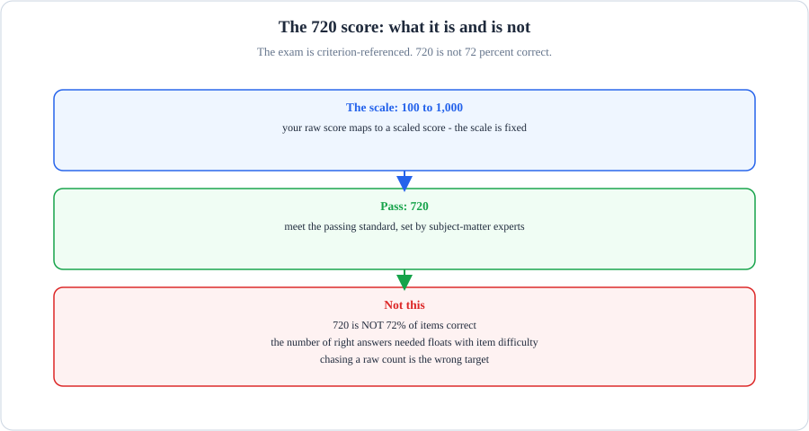
- The scale: 100 to 1,000. Your raw score maps to a scaled score.
- Pass at 720: the passing standard, set by subject-matter experts.
- Not this: 720 is NOT 72 percent correct. The raw count needed floats with item difficulty.
What breaks if a part fails: if you chase a raw count of right answers, you aim at a moving target. The standard is what matters.
| Item | Fact |
|---|---|
| Items | 63. Multiple-choice and multiple-response. Each item states how many responses to select. |
| Duration | 120 minutes. That is about 1 minute 54 seconds per item. |
| Delivery | Proctored via Pearson VUE (OnVUE online or test center). |
| Passing score | The score is 720. This is on a scaled 100 to 1,000 scale. The exam uses criterion-referencing. Therefore, 720 is not the same as 72 percent correct. |
| Fee | US$175. Valid 12 months. |
| Style | Scenario-based items about production design decisions and trade-offs. Not config trivia. |
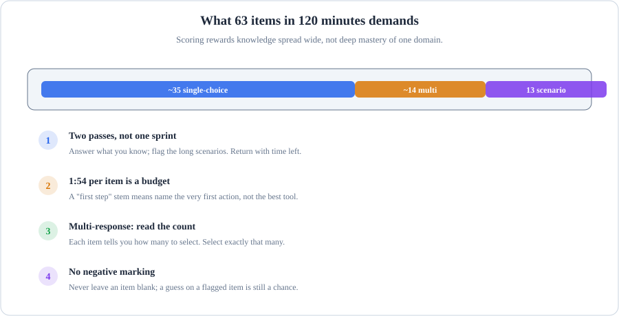
- The mix is roughly 35 single-choice, 14 multi-response, 13 scenario. Scoring rewards knowledge spread wide.
- Two passes: answer what you know first, flag the long scenarios, return with time left.
- 1:54 per item is a budget, not a target. A first step stem asks for the very first action, not the best tool.
- Multi-response: read the selection count first and select exactly that many. No negative marking, so never leave a blank.
What breaks if a part fails: If you sprint in one pass, the long scenarios use much time. The easy items at the end remain unanswered.
How to use this bank
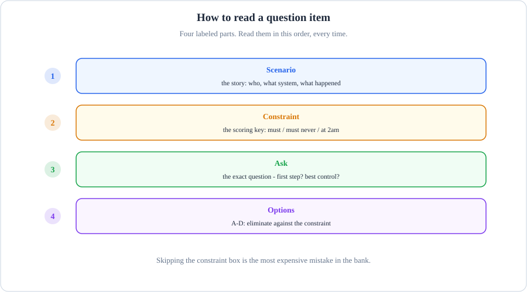
- Scenario: the story - who, what system, what happened.
- Constraint: the scoring key - must, must never, at 2am.
- Ask: the exact question. First step? Best control?
- Options: A through D. Eliminate against the constraint, not against your gut.
What breaks if a part fails: if you skip the constraint box, you will pick the plausible answer instead of the credited one.
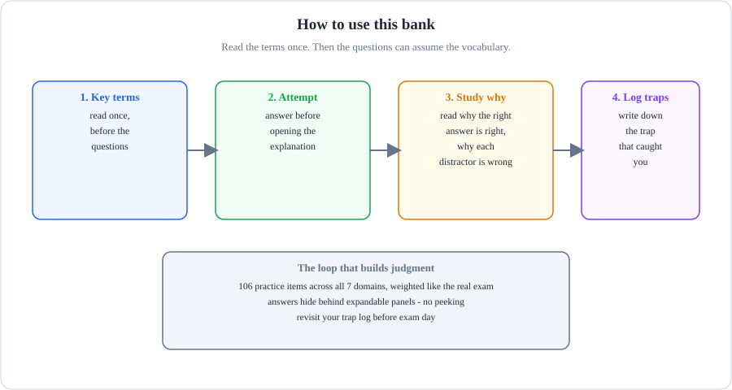
- Key terms: read them once, before the questions. Then the bank can assume the vocabulary.
- Attempt: answer before you open the explanation. No peeking.
- Study why: read why the right answer is right and why each distractor is wrong.
- Log traps: write down the trap that caught you. Revisit the log before exam day.
What breaks if a part fails: if you peek at the answer first, you train recognition, not judgment - the exam tests judgment.
Read the scenario. Then read the constraint box. The constraint is the scoring key. Several options will be partly correct. The credited answer best satisfies the stated constraint. This includes accuracy SLA, latency budget, compliance rule, or cost ceiling.
Find the numbers and rules in the scenario first. Then judge each option against them. An option that is good engineering but breaks the constraint is a distractor. Pick your answer before you open the explanation panel. Each explanation gives the correct answer. It shows why it wins.
It also shows why every other option loses.
Key terms used in this bank
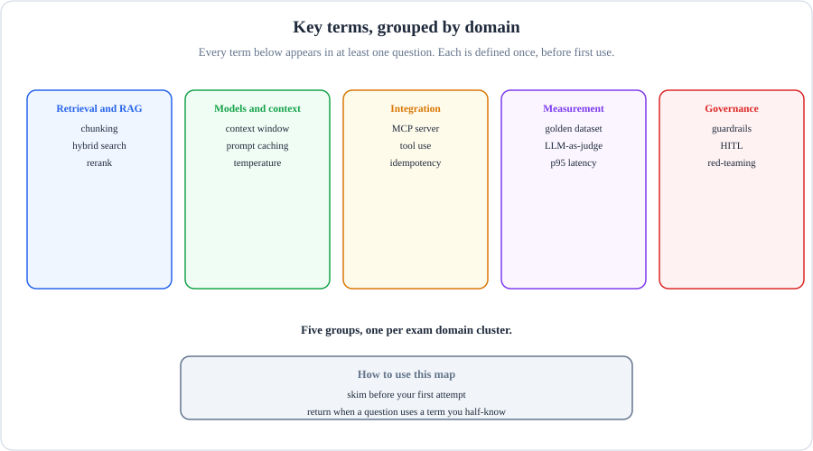
- Each column holds one domain cluster: chunking and rerank under Retrieval, MCP and tool use under Integration.
- Every term appears in at least one question. We define each term one time. We define it before its first use.
- Skim the map before your first attempt. Return when a question uses a term you half-know.
What breaks if a part fails: if you skip the terms, the questions will test vocabulary you never nailed down.
Every term below appears in at least one question. We define each term one time here. This occurs before its first use. Read this section one time. Then the questions can assume the vocabulary.
Retrieval and RAG
| Term | Meaning |
|---|---|
| RAG (Retrieval-Augmented Generation) | Answering from your own documents: the system retrieves relevant passages and the model answers from them, instead of answering from memory. |
| Chunk | One small retrievable piece of a document. Chunking is the decision of where to cut. |
| Embedding | A long list of numbers that captures the meaning of a piece of text. Similar meanings land near each other. |
| Vector | The embedding stored as a point in a mathematical space, so the database can find "nearby" meanings fast. |
| Metadata | Facts stored alongside a chunk, such as document ID, section, or date, used to filter before the similarity search. |
| Top-k | The k highest-scoring chunks returned by retrieval, for example the top 5. |
| Rerank | A second, slower model that re-scores the retrieved chunks and keeps only the best few. Cheap recall first, careful precision second. |
| Semantic search | Searching by meaning (embeddings), so "car" matches "automobile". |
| Keyword search | Searching by exact words (such as BM25, a classic word-frequency ranking formula), so "car" does not match "automobile". |
| Hybrid search | Running semantic and keyword search together and merging the results, to catch both meaning and exact terms. |
| Precision | Of the chunks retrieved, how many were actually relevant. |
| Recall | Of all the relevant chunks that exist, how many the retrieval found. |
| Faithfulness | The share of the answer's claims that are verifiable against the retrieved text. The opposite of hallucination. |
| Hallucination | The model stating something as fact that is not supported by its sources. |
| ROUGE | A score that measures word overlap between a generated summary and a reference summary. It rewards similar wording, not truthfulness. |
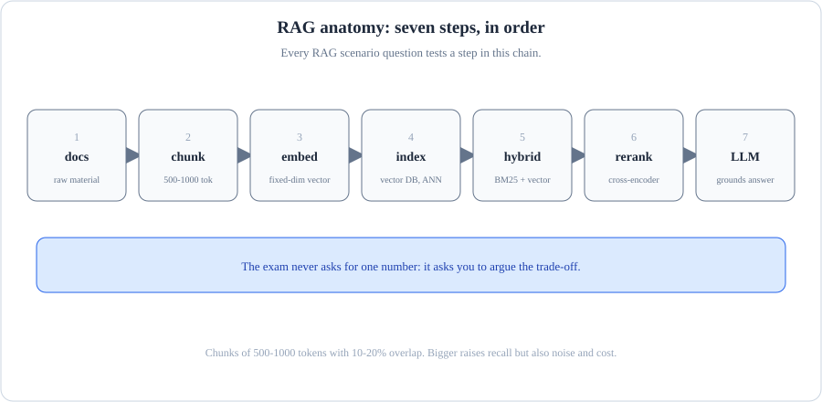
- We chunk docs into 500-1000 token pieces. These pieces have 10-20% overlap. Then we embed them as fixed-dimension vectors.
- The vector DB indexes them for approximate nearest-neighbor search.
- Hybrid adds BM25 lexical search; fusion combines both rankings.
- Rerank scores query and document together with a cross-encoder and keeps the top-k.
- The exam never asks for one number: it asks you to argue the trade-off. Bigger chunks raise recall but also noise and cost.
What breaks if a part fails: If the chunking ignores the data shape, recall dies no matter how good the reranker is.
Models and context
| Term | Meaning |
|---|---|
| Temperature | A setting that controls randomness: low temperature makes the model pick the most likely token each time, high temperature makes it sample more freely. |
| Context window | The maximum amount of text (prompt plus history plus retrieved chunks) the model can consider in one request. |
| Zero-shot | Asking the model to do a task with instructions only, no examples. |
| Few-shot | Showing the model a few worked examples inside the prompt before asking it to do the task. |
| Chain-of-thought | Asking the model to reason step by step before giving the final answer, which usually improves accuracy on hard problems. |
| Prompt caching | You pay full price one time for the stable part of a prompt. Then you pay a tenth of the price. This occurs when you reuse the same prefix within a few minutes. |
| LLM judge | Using a language model, guided by a scoring rubric, to grade another model's outputs at a scale humans cannot match. |
| Golden set | This is a frozen, versioned collection of test cases. It has known-good answers. We score every change against this collection. |
Integration and reliability
| Term | Meaning |
|---|---|
| MCP (Model Context Protocol) | The open standard that connects Claude to external tools and data through small services called MCP servers. |
| OAuth 2.0 | This is the industry standard for delegated sign-in. The user logs in one time. The service receives a narrowly scoped token. It does not receive a shared password or API key. |
| SSO (single sign-on) | One login that grants access to many company systems, managed centrally by IT. |
| Sandbox | An isolated execution environment where untrusted code or tools can run without touching real systems. |
| Timeout | A maximum wait: if the tool or model call takes longer, it is cut off and treated as failed. |
| Retry | Calling again after a failure. Safe only for idempotent operations (ones where running twice has the same effect as running once). |
| Circuit breaker | A guard that stops calling a failing service for a while, so retries do not pile onto an outage. |
| Bulkhead | A cap on how many calls can hit one dependency at once, so one slow partner cannot consume every worker. |
| Rate limit | A cap on how many requests a caller may make in a time window. |
| Canary | Releasing a change to a small slice of traffic first and watching the metrics before rolling it out fully. |
| Rollback | Reverting to the previous working version when a release misbehaves. |
Measurement
| Term | Meaning |
|---|---|
| SLA (service-level agreement) | A promised target, such as "95 percent accuracy" or "answer within 2 seconds", that the design must meet. |
| p95 latency | The latency that 95 percent of requests beat. If p95 is 2 seconds, 5 percent of users wait longer. |
| Latency | How long one request takes, end to end. |
| Throughput | How many requests the system handles per unit of time. |
| A/B test | Routing part of the traffic to version A and part to version B, then comparing measured outcomes to decide which ships. |
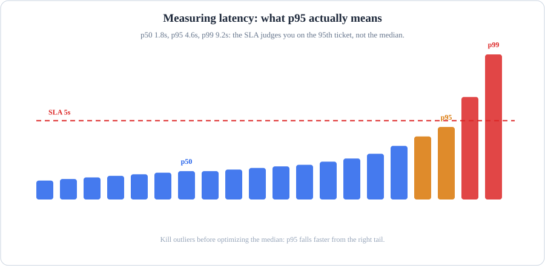
- p50 is the median ticket: 1.8s. p95 is the 95th percentile: 4.6s. p99 is 9.2s.
- The dashed SLA line is at 5 seconds. This line shows your performance target. Tickets above this line fail.
- Kill outliers before optimizing the median: p95 falls faster from the right tail than from the middle.
- Prompt design levers for latency: cap max_tokens, fix the output format, use stop sequences.
What breaks if a part fails: If you optimize the median, the SLA can still fail. The users in the tail are the ones who complain.
Governance and safety
| Term | Meaning |
|---|---|
| PII (personally identifiable information) | Data that identifies a person: names, emails, phone numbers, addresses, account numbers. |
| PHI (protected health information) | Health data covered by HIPAA: diagnoses, visit notes, prescriptions, anything tying health facts to a patient. |
| GDPR | This is the European privacy regulation. It controls how to collect personal data. It controls how to store personal data. It controls how to process personal data of EU residents. |
| HIPAA | The US health-privacy law. Processing PHI requires a signed BAA with the vendor. |
| FedRAMP | The US federal program that authorizes cloud services to handle government data, with graded impact levels. |
| BAA (Business Associate Agreement) | The contract a vendor signs promising to safeguard PHI. Only certain plans and surfaces are BAA-eligible. |
| ZDR (zero data retention) | A contractual promise that the provider stores none of your request or response data after serving it. |
| Data retention | How long a provider keeps your prompts and outputs, and under what terms. |
| Human-in-the-loop (HITL) | A design where the system pauses and a person approves before a sensitive or irreversible action proceeds. |
| Red team | A group that attacks the system on purpose (jailbreak attempts, injection, misuse) to find weaknesses before real attackers do. |
| Jailbreak | A prompt crafted to make the model bypass its own safety rules. |
Why this order. The bank follows exam weight. The heaviest domain is first. Your practice time matches where the points are. D3 Integration is 19 percent of the exam. This is the largest single share.
It is also the most scenario-dense. It includes tool and agent configuration, auth gaps, accuracy-latency trade-offs, observability, RAG pipelines, and MCP versus API, CLI, and agent-to-agent patterns.
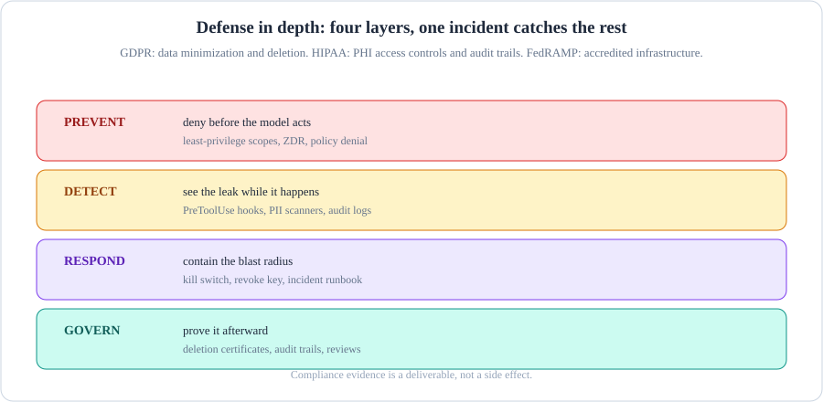
- PREVENT: deny before the model acts. Least-privilege scopes, zero-data-retention, policy denial.
- DETECT: see the leak while it happens. PreToolUse hooks, PII scanners, audit logs.
- RESPOND: contain the blast radius. Kill switch, revoke the key, run the incident runbook.
- GOVERN: prove it afterward. Deletion certificates, audit trails, reviews. GDPR wants data minimization and deletion, HIPAA wants PHI access controls and audit trails, FedRAMP wants accredited infrastructure.
What breaks if a part fails: If governance is only a policy document, there is no evidence when the auditor asks. Compliance evidence is a deliverable.
D3. Integration (19% of the exam, about 12 items)
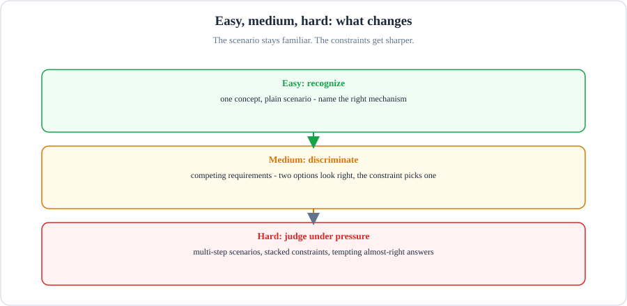
- Easy: recognize. One concept, plain scenario. Name the right mechanism.
- Medium: discriminate. Competing requirements. Two options look right; the constraint picks one.
- Hard: judge under pressure. Multi-step scenarios, stacked constraints, tempting almost-right answers.
What breaks if a part fails: if you only drill easy items, the medium tier will feel like a different exam.
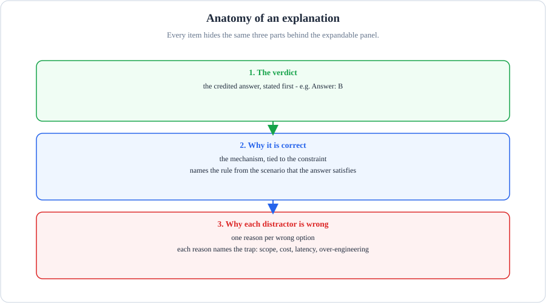
- The verdict: the credited answer, stated first.
- Why it is correct: the mechanism, tied to the constraint in the scenario.
- Why each distractor is wrong: one reason per wrong option, each naming the trap.
What breaks if a part fails: if you only read the verdict, you learn the answer to one question. The why teaches you the next ten.
Tool and agent configuration, auth gaps, accuracy-latency trade-offs, observability, RAG pipelines, retrieval strategies, MCP vs API/CLI vs agent-to-agent, progressive discovery vs monolithic context.
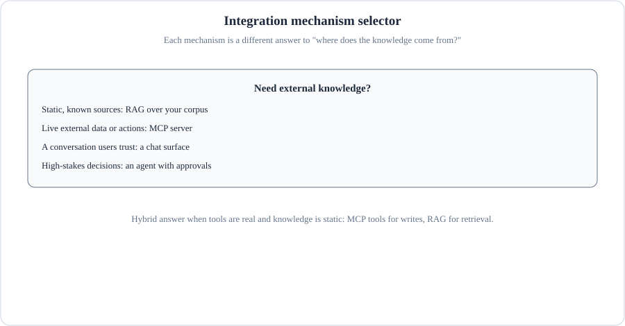
- Static, known sources: RAG over your corpus.
- Live external data or actions: an MCP server.
- A conversation users trust: a chat surface.
- High-stakes decisions: an agent with approvals.
- Hybrid when tools are real and knowledge is static: MCP tools for writes, RAG for retrieval.
What breaks if a part fails: If you reach for an agent when a lookup would do, you pay agent prices for lookup answers.
Next: D1 Solution Design and Architecture (17 percent). Integration implements designs; D1 covers the design decisions themselves.
D1. Solution Design and Architecture (17% of the exam, about 11 items)
Why this comes next. D3 covered how pieces connect. D1 covers the decisions that come before connection: choosing models, shaping context, and structuring the whole solution. It is 17 percent of the exam, the second-heaviest domain.
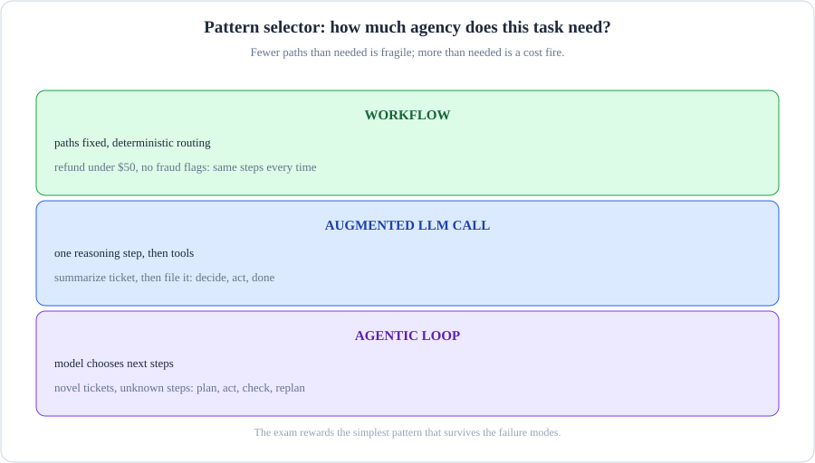
- WORKFLOW: paths fixed, deterministic routing. Refund under $50 with no fraud flags: the same steps every time.
- AUGMENTED LLM CALL: one reasoning step, then tools. Summarize the ticket, then file it: decide, act, done.
- AGENTIC LOOP: the model chooses next steps. Novel tickets, unknown steps: plan, act, check, replan.
- The exam rewards the simplest pattern that survives the failure modes.
What breaks if a part fails: Fewer paths than needed is fragile; more than needed is a cost fire.
Translating business problems into Claude solutions, end-to-end architectures, workflow vs agentic vs augmented LLM patterns, multi-agent orchestration, decomposition, business value pillars (efficiency, transformation, productivity, cost, performance SLAs).
Next: D4 Evaluation, Testing and Optimization (16 percent). Designed and integrated systems still need proof they work.
D4. Evaluation, Testing and Optimization (16% of the exam, about 10 items)
Why this comes next. D1 decided what to build and D3 connected it. D4 asks the question neither answered: how do you know it works? Evaluation design, testing strategy, and optimization under constraints. Sixteen percent of the exam.
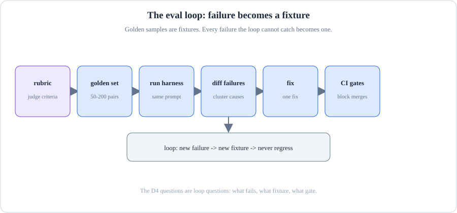
- Start with the rubric: the judge criteria written down before anything runs.
- Build the golden set: 50-200 query and answer pairs with known-good answers.
- Run the harness on the same prompt every time, diff the failures, cluster the causes.
- Fix one thing, then let CI gates block the merge if a gate fails.
- The loop never ends: every failure the loop cannot catch becomes a new fixture.
What breaks if a part fails: If the golden set never grows, regressions return wearing different clothes.
Defining eval metrics (accuracy, latency, cost, safety, security), building eval datasets with mixed methods, A/B testing, diagnosing failures (prompt failure, hallucination, model mismatch), token and cost optimization, production monitoring.
Next: D5 Governance, Safety and Risk Management (14 percent). A system that works still operates under rules.
D5. Governance, Safety and Risk Management (14% of the exam, about 9 items)
Why this comes next: D4 proved the system works. D5 asks what the rules allow. This includes safety, compliance, and risk management. It also includes the guardrails that bind every design. This covers fourteen percent of the exam.
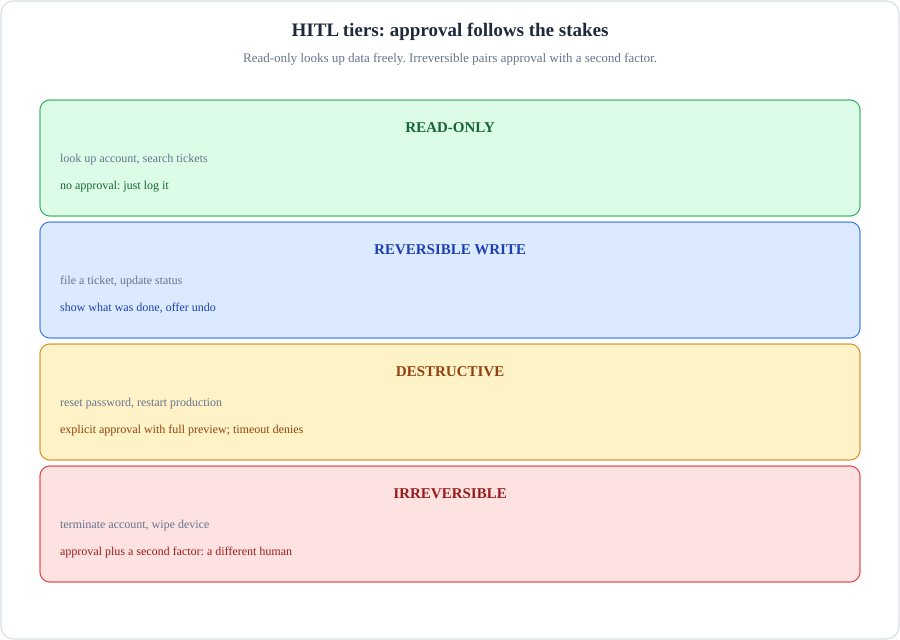
- READ-ONLY: look up account, search tickets. No approval, just log it.
- REVERSIBLE WRITE: file a ticket, update status. Show what was done, offer undo.
- DESTRUCTIVE: reset password, restart production. Explicit approval with a full preview; a timeout defaults to deny.
- IRREVERSIBLE: terminate account, wipe device. Approval plus a second factor: a different human.
What breaks if a part fails: If destructive actions need no approval, the incident is one bad tool call away.
Guardrails and safety controls, risks and failure modes of LLM systems, human-in-the-loop validation, regulatory compliance (GDPR, HIPAA, FedRAMP), ethical AI (bias, fairness, transparency).
Next: D6 Stakeholder Communication and Lifecycle Management (14 percent). Governed systems need buy-in, rollout plans, and a lifecycle.
D6. Stakeholder Communication and Lifecycle Management (14% of the exam, about 9 items)
Why this comes next. D5 set the rules. D6 covers the human side: explaining decisions to stakeholders, managing the lifecycle from pilot to production, and communicating risk. Fourteen percent of the exam.
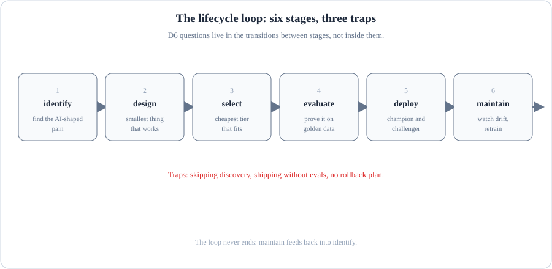
- Identify the AI-shaped pain, design the smallest thing that works, select the cheapest tier that fits.
- Evaluate on golden data before you deploy; deploy with a champion and a challenger.
- Maintain means watching drift and retraining: then the loop feeds back into identify.
- The traps: skipping discovery, shipping without evals, no rollback plan.
What breaks if a part fails: If maintain has no owner, customers discover drift.
Structured discovery and requirements, communicating decisions and trade-offs, feedback loops and SLA alignment, architecture documentation, lifecycle phases from discovery through monitoring and iteration.
Next: D2 Claude Models, Prompting and Context Engineering (13 percent). Now the model-level foundations underneath everything above.
D2. Claude Models, Prompting and Context Engineering (13% of the exam, about 8 items)
Why this comes next. D3 through D6 covered systems and their surroundings. D2 goes one level down to the model itself: choosing models, writing prompts, and engineering context. Thirteen percent of the exam.
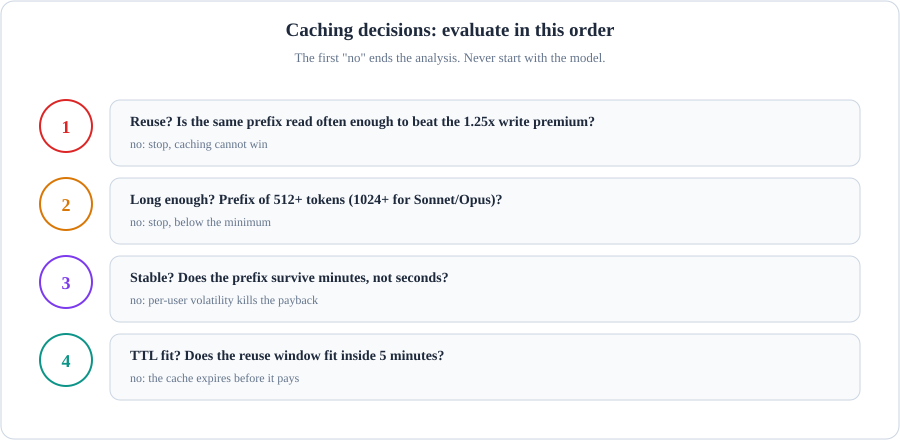
- Reuse: is the same prefix read often enough to beat the 1.25x write premium? No means stop.
- Length: is the prefix 512+ tokens (1024+ for Sonnet and Opus)? Below the minimum means stop.
- Stability: does the prefix survive minutes, not seconds? Per-user volatility kills the payback.
- TTL fit: does the reuse window fit inside 5 minutes? If the cache expires before it pays, stop.
What breaks if a part fails: If you start with the model instead of reuse, you optimize a cache that never hits.
Selecting Claude models on trade-offs, system prompts and templates, zero-shot vs few-shot vs chain-of-thought, context window management, prompt reuse (caching, modular prompts, Skills). Note: prompting is 6th of 7 domains by weight on this exam. It leads nothing.
Next: D7 Developer Productivity and Operational Enablement (7 percent), the smallest domain, closing the domain overviews.
D7. Developer Productivity and Operational Enablement (7% of the exam, about 4 items)
Why this comes next. D7 is the smallest domain at 7 percent, and the most operational: configuring Claude tools for teams, AI-assisted workflows, debugging, and runbooks. A short section, and a good cool-down before exam strategy.
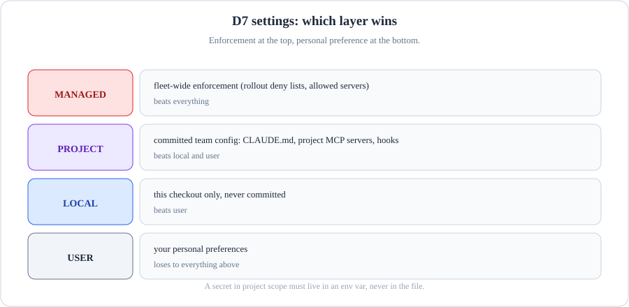
- MANAGED: fleet-wide enforcement, rollout deny lists, allowed servers. Beats everything.
- PROJECT: committed team config: CLAUDE.md, project MCP servers, hooks. Beats local and user.
- LOCAL: this checkout only, never committed. Beats user.
- USER: your personal preferences. Loses to everything above.
- A secret in project scope must live in an env var, never in the file.
What breaks if a part fails: If team behavior lives in personal config, compliance depends on every individual complying forever.
Configuring Claude tools and environments for teams (for example Claude Code), improving developer workflows with AI-assisted tooling, supporting debugging and operational issue resolution.
Question bank: 106 items in number order
The 106 items follow in number order, Q1 to Q106. They are not grouped by domain or difficulty. Each item carries its domain tag (D1-D7) and a difficulty pill (Easy, Medium, Hard). Open an item to reveal the answer and the full explanation.
- Split each contract into 2,000-token chunks with no overlap, to keep each clause in rich surrounding context.
- Split each contract into 400 to 600-token chunks with 10 percent overlap, and attach contract ID plus section heading as metadata on every chunk.
- Embed each full contract as a single vector and retrieve the whole contract, letting the model find the clause.
- Chunk by fixed 100-token windows with no overlap or metadata, to maximize retrieval precision.
Show answer and explanation
Why B is correct: The constraint is exact clause citation. Small chunks raise retrieval precision. This ensures the cited clause is actually returned. Overlap prevents clauses split across boundaries from being lost. Metadata (contract ID, section) lets the system filter and cite correctly.
- A is wrong. 2,000-token chunks dilute precision. The retriever returns long passages. The model may quote the wrong clause from the same chunk.
- C is wrong. A whole contract far exceeds useful retrieval granularity. The model cannot reliably locate one clause in 40,000 embedded documents.
- D is wrong. 100-token windows with no overlap will slice clauses in half. Without metadata, the system cannot attribute a quote to the right contract.
- Call the CRM REST API directly through function calling, since there is one stable API and six endpoints.
- Build both an MCP server and direct REST tools, so the agent can choose at runtime.
- Use an agent-to-agent protocol so the CRM can negotiate with the Claude agent directly.
- Build an MCP server. MCP is the standard. Future tools will need MCP.
Show answer and explanation
Why A is correct: MCP pays off when there are many tools. It also pays off with dynamic discovery or shared servers across agents. With one stable API and a two-week deadline, direct function calling is simpler. It has less to maintain. This is exactly what the constraint asks for.
- D is wrong. "MCP is the standard" is not a reason by itself. It adds a server to build, host, and secure. There is no capability gain here.
- B is wrong. Maintaining two integration paths doubles the maintenance surface. This is the opposite of the constraint.
- C is wrong. Agent-to-agent protocols connect agents to agents. They do not connect agents to a REST API. The CRM is not an agent.
- Upgrade to a larger model so it can handle 47 tools more reliably.
- Add five more helper tools that pre-select the right tool for common cases.
- Group tools into fewer, well-named functions (or namespaced MCP servers) so the agent sees a small set of distinct choices, with details revealed on demand.
- Raise the temperature so the agent explores different tools more creatively.
Show answer and explanation
Why C is correct: This is tool bloat. A flat list of 47 similar tools makes selection a guessing game. Grouping into a small set of distinct, well-named entry points cuts wrong-tool calls. It also keeps every capability reachable. This is progressive disclosure of the rest.
- A is wrong. A larger model costs more. It also adds latency. It treats the symptom (bad selection) instead of the cause (47 indistinguishable options).
- B is wrong. Adding tools makes the bloat worse. It does not make it better.
- D is wrong. Higher temperature increases randomness. This increases wrong-tool calls.
- Remove authentication entirely and rely on the office VPN for access control.
- Keep the shared token but rotate it weekly.
- Give the agent one token per employee, all with full admin scope, stored in the agent's config file.
- Use OAuth 2.0 delegated tokens: each request carries the requesting user's own token, scoped to least privilege.
Show answer and explanation
Why D is correct: OAuth delegated tokens make the agent act as the user. The agent has only that user's permissions. This satisfies the least privilege principle. This removes the shared privileged credential.
- B is wrong. Rotation does not change the blast radius. One leaked token still reaches everyone's expenses.
- C is wrong. Per-employee admin tokens are still over-privileged. Storing them in a config file creates a new secret-sprawl problem.
- A is wrong. The VPN proves network location. It does not prove user identity or authorization. Any user on the VPN can reach anyone's expenses.
- Route with a fast model first; escalate to the large model only when the fast model's confidence is low. Verify the mix on a labeled eval set.
- Cache every ticket classification so repeat tickets never hit the model.
- Switch everything to the smallest, fastest model and accept whatever accuracy results.
- Keep the large model but cut the output token limit in half to reduce latency.
Show answer and explanation
Why A is correct: Tiered routing gets most tickets under the latency bar. A fast model runs first. The system escalates tickets with low confidence. A large model protects the accuracy bar on hard cases. The eval-set check proves both bars hold before launch. This meets the constraint.
- C is wrong. It guarantees the latency bar. It abandons the accuracy bar. "Accept whatever accuracy" violates the stated 90 percent floor.
- D is wrong. Cutting output tokens does not reliably cut 6 seconds to under 2 seconds. It risks truncating the reasoning. The 93 percent accuracy depends on this reasoning.
- B is wrong. Support tickets are mostly unique. Cache hit rates will be near zero. This changes almost nothing.
- Emit structured traces (one span per tool call and model call with token counts and latency), sample a fraction of full transcripts, and run an automated faithfulness eval over the sample daily.
- Track only aggregate latency and token cost dashboards.
- Log only error responses and review them weekly.
- Store every prompt and completion in full, and hire reviewers to read them.
Show answer and explanation
Why A is correct: Structured traces give cheap, always-on coverage of behavior. Sampling keeps storage affordable at 2M requests per day. A daily automated faithfulness evaluation on the sample detects hallucination drift. This happens inside the 24-hour window.
- C is wrong. Hallucinations rarely raise errors. Error logs miss them entirely. Weekly review misses the 24-hour window.
- D is wrong. Full logging at 2M requests per day violates the cost constraint. Manual review cannot keep up.
- B is wrong. Latency and cost dashboards say nothing about answer quality. Drift would be invisible.
- Use dense vector search for both patterns, trusting the embedding to rank INC-48210 first.
- Route the query first: detect an incident ID pattern and send it to exact lookup, otherwise use semantic search.
- Use dense vector (semantic) search for the fuzzy similar-incident queries.
- Use exact keyword matching on the full error text for the fuzzy similar-incident queries, so results stay deterministic.
Show answer and explanation
Why C, B is correct: The constraint has two halves. C supplies the correct mechanism for the fuzzy half. This is dense semantic search. B supplies the routing rule. Detect an incident ID and send it to exact lookup. Otherwise, use semantic search.
Together they cover both query patterns. They use the correct mechanism each time.
- D is wrong. Exact keyword matching cannot handle the fuzzy half. If the wording of the error varies, keyword lookup misses similar incidents. Semantic search would find these incidents. Determinism is not worth missed matches.
- A is wrong. Semantic search can return a similar-but-wrong incident for an ID query. The constraint explicitly forbids this.
- Root cause: prompt injection through untrusted tool descriptions. Mitigation: treat MCP tool schemas as untrusted input, pin server versions, and sandbox or gate destructive tool calls behind confirmation.
- Root cause: the MCP protocol is insecure. Mitigation: stop using MCP and rewrite every tool by hand.
- Root cause: the API key was in the prompt. Mitigation: delete the key and continue.
- Root cause: the model is too small. Mitigation: upgrade the model.
Show answer and explanation
Why A is correct: Tool descriptions are model input. A malicious or compromised server can inject instructions through them. Pinning versions stops silent updates. Treating schemas as untrusted blocks the injection path. Sandboxing plus confirmation gates limit what a hijacked call can do.
- D is wrong. Model size does not fix prompt injection. Larger models follow injected instructions just as well.
- B is wrong. The protocol is not the flaw. Untrusted content is the flaw. Rewriting everything by hand removes MCP's value. It does not address the actual attack path.
- C is wrong. Deleting the key after exfiltration does not stop the next attempt. It treats the symptom. It does not treat the injection.
- Switch to a model with a 1-million-token context window and keep loading all summaries.
- Use progressive discovery. Give the agent search tools. Give the agent file-reading tools. Give the agent an index of entry points. The agent pulls only the code it needs. The agent pulls code when it needs it.
- Compress all summaries with a smaller model before the session starts, then load the compressed version.
- Split the repo into 50 fixed partitions and run 50 agents, one per partition.
Show answer and explanation
Why B is correct: Progressive discovery replaces the monolithic upfront load with on-demand retrieval. The agent starts from entry points. It fetches only relevant files. This fits any repo size. It brings token cost back down. This is the textbook fix for monolithic-context failure.
- A is wrong. A bigger window just delays the failure. It costs more per token. It does not change the wasteful load-everything pattern.
- C is wrong. Compression loses the details migration work depends on. This includes exact APIs and edge cases. It still front-loads cost for code never touched.
- D is wrong. 50 agents multiply cost and coordination overhead. Most partitions are irrelevant to any single migration task.
- Direct Anthropic API with zero data retention (ZDR) enabled, plus application-level audit logs.
- AWS Bedrock is in the hospital's region. It has a PHI-eligible configuration. It has a signed BAA. It sends inference logs to the hospital's audit store. No data leaves the region.
- Direct Anthropic API in the default configuration, since Anthropic never trains on API data by default.
- Self-host an open-weights model on hospital servers to avoid all third-party terms.
Show answer and explanation
Why B is correct: Bedrock keeps inference inside the chosen AWS region. This is residency. It offers HIPAA-eligible services with a BAA. This is the legal instrument auditors require. It lets the hospital own the audit logs. It is the only option that structurally satisfies all three legal requirements.
-
A is wrong. The direct API cannot pin processing and storage to a specific AWS region. Inference is global or US-only. Workspace storage is US-only. So, it cannot satisfy the residency requirement. ZDR plus a BAA would cover the other two requirements.But residency is a hard legal bar here.
- C is wrong. "Never trains by default" is a policy claim. It is not a regional control. It is not a contractual control. It fails residency. It fails auditability.
- D is wrong. Self-hosting puts the whole compliance burden on the hospital. This includes hardening, patching, and auditing the model stack. It reduces model quality. It gives no legal gain over option B.
- It will not fail. Uniform chunking is the industry standard for mixed corpora.
- It will fail on cost. Replace it with a smaller embedding model.
-
It will fail. Different data shapes need different handling. Chunk PDFs by section. Index tables as structured rows with metadata filters. Chunk code by function. Use hybrid dense plus keyword search.Do this over the combined index.
- It will fail on latency. Replace it with an in-memory cache of all embeddings.
Show answer and explanation
Why C is correct: Tables sliced into 500-token windows destroy row structure. Code sliced mid-function destroys meaning. Match the chunking to the data shape. This includes sections, rows, and functions. Use metadata filters and hybrid search. This keeps what each type needs for accurate retrieval.
- B is wrong. The failure is retrieval quality. It is not embedding cost. A cheaper embedding of badly chunked text is still badly chunked.
- D is wrong. Latency is not the problem. A cache does not repair broken chunk boundaries.
- A is wrong. It denies the problem. Uniform chunking across prose, tables, and code is a known retrieval-quality trap.
- A shared REST API that both agents poll for updates.
- An agent-to-agent protocol, because the integration is agent to agent: they need to delegate tasks and report status, which is what agent-to-agent communication is for.
- Merge both agents into one agent with all tools, eliminating the integration.
- MCP, because MCP connects the booking agent's tools to the expense agent.
Show answer and explanation
Why B is correct: MCP connects agents to tools and data sources. It does not define how two autonomous agents delegate and coordinate. An agent-to-agent protocol is for this purpose. It handles task handoff, status updates, and negotiation between separate agents.
- D is wrong. It misapplies MCP. MCP is agent-to-tool. It is not agent-to-agent.
- A is wrong. Polling a REST API gives data exchange. It gives no task-delegation semantics. Each vendor would have to invent coordination.
- C is wrong. The agents are separate vendor systems. Merging them is not technically feasible. Merging them is not contractually feasible.
- An augmented LLM with open tool access and no prescribed sequence.
- A multi-agent swarm where subagents negotiate who handles each invoice.
- A fully agentic system where the model plans its own steps per invoice.
- A workflow: fixed prompt chain with defined steps, validation gates, and logging at each stage.
Show answer and explanation
Why D is correct: The steps are known upfront. The steps never change. A workflow is the most reliable choice. It is also the most auditable choice. It removes the nondeterminism that the constraint does not want.
- C is wrong. Agentic planning adds nondeterminism. It adds cost to a process. The steps of this process are already known. Flexibility is not necessary here.
- A is wrong. Open tool access without a prescribed sequence makes auditing harder. It invites skipped validation steps.
- B is wrong. A negotiating swarm is massive overengineering. This is for identical invoices with fixed steps.
- Map the solution to value pillars with numbers: hours saved per contract, cost per review before and after, error-rate reduction, and payback period.
- Promise full transformation of the legal department within one quarter.
- Focus on the elegant multi-agent architecture under the hood.
- Emphasize that the system uses the most advanced model available.
Show answer and explanation
Why A is correct: The value pillars are efficiency, cost, productivity, and performance. The CFO's language is numbers. This includes hours, cost per unit, error rates, and payback. A translates the solution into these terms.
- D is wrong. Model choice is an implementation detail. It is not business value.
- B is wrong. An unmeasurable transformation promise is the hype. The CFO screens out this hype.
- C is wrong. Architecture elegance does not appear on any value pillar.
- Reduce the source set to 20 documents so one prompt can handle it.
- Use a larger context window and repeat the same single prompt.
- Decompose: a planner outlines sections, researcher subagents gather evidence per section in parallel, then a synthesizer writes the full report from the gathered evidence.
- Ask the model to write the report one page at a time with no plan.
Show answer and explanation
Why C is correct: Decomposition matches the work to the model's strengths. First, plan the structure. Then, gather evidence for each section in parallel. After that, synthesize the information. Each step has a manageable context. This avoids one impossible large prompt.
- B is wrong because a bigger window does not fix the lack of structure. The model still skims. It does not go deep.
- D is wrong because writing page-by-page without a plan produces incoherent reports. The reports drift from the outline.
- A is wrong because it discards 90 percent of the sources. This violates the synthesis constraint.
- Run the six researchers sequentially so they cannot collide.
- Give every subagent its own private memory and merge by concatenating outputs.
- Let subagents coordinate peer-to-peer with a shared chat channel.
- Orchestrator assigns non-overlapping scopes, all findings go to a shared structured store with unique keys, and the orchestrator merges at the end.
Show answer and explanation
Why D is correct: Non-overlapping scopes remove duplicated effort. A shared keyed store prevents overwrites. Each finding has one key. The orchestrator keeps full visibility for the merge. All three parts of the constraint are met.
- C is wrong. Peer-to-peer chat is not structured. Agents still collide. The orchestrator loses visibility into side conversations.
- A is wrong because sequential execution fixes collisions. It does this by destroying parallelism. Six researchers take six times longer.
- B is wrong because private memories plus concatenation duplicates effort. It produces conflicting merged output. There is no deduplication.
- More ratings. Add a popup asking every user to rate.
- This is a feedback loop. Sample low-rated answers each week. Add the failures to the eval set. Review prompt or retrieval fixes against the eval set. Ship what makes the score better.
- A bigger model, since ratings show the current one is weak.
- Delete the rating button; it creates noise without value.
Show answer and explanation
Why B is correct: Feedback makes quality better only when it goes somewhere. Failures become evaluation cases. You test fixes against the evaluation set. The loop repeats on a schedule. B builds the full input, processing, output, and feedback system. The constraint asks for this.
- A is wrong because the problem is not rating volume. 40,000 unused ratings prove more data without a loop changes nothing.
- C is wrong because the ratings do not diagnose the model as the cause. The failures can be retrieval or prompt issues. A bigger model would share these issues.
- D is wrong because it destroys the signal. It does not use the signal.
-
This is an Augmented LLM. It is a workflow with tools. The path is fixed. The model fills in one open-ended step. The label is important. A fixed path needs validation gates.It does not need agent loop controls.
- Fully manual, because a human must approve every comment.
- Multi-agent, because linting, testing, and commenting are three jobs.
- Agentic, because it uses tools. Agentic systems need loop limits and escalation controls.
Show answer and explanation
Why A is correct: Tool use alone does not make a system agentic. Who decides the steps is important. Here the steps are fixed. So, it is an augmented LLM. It is a tool-using workflow. The label controls the system.
Fixed paths get gates and checks.
Truly agentic loops need iteration limits and stop conditions.
- D is wrong because it mislabels the system. Applying agent loop controls to a fixed pipeline adds complexity. It does this without benefit.
- B is wrong because human approval of every comment defeats the automation goal. The design does not require this.
- C is wrong because three sequential steps do not make three agents. Splitting them adds orchestration overhead. There is no gain.
- Use the largest model for best answer quality and accept slower spikes.
- Disable the assistant during market open to protect the SLA.
- Provision for average load and add a queue; users wait during spikes.
- Design for peak with autoscaling. Add a defined degraded mode. Use cached or short answers. Show a clear banner when the full pipeline cannot meet 3 seconds. The SLA states degraded-mode behavior clearly.
Show answer and explanation
Why D is correct: Autoscaling handles the 10x spike. The explicit degraded mode means the SLA is honest. It states what happens under extreme load. It does not silently break. Stating degraded behavior in the SLA makes it a real SLA. It is not just a hope.
- C is wrong because queuing during market open directly violates the 3-second p95 requirement.
- A is wrong because it prioritizes quality over the stated SLA. The constraint ranks the latency bar above model size.
- B is wrong because disabling the system at peak need is an admission. It means the design failed the SLA.
- Making the pipeline fully autonomous with no human queues, to maximize throughput.
- Combining intake and processing into one giant prompt to reduce handoff errors.
- Using the same model for all four stages to keep behavior consistent.
- Stage boundaries with structured handoffs: each stage emits a typed result plus confidence. Route low-confidence or failed results to a human queue. Attach the full stage history to each routed result. Log every handoff.
Show answer and explanation
Why D is correct: Structured handoffs with confidence scores make each stage observable. The human queue with full history satisfies the routability requirement. It does not lose claims. Logging every handoff gives the audit trail. It is the only option built around the constraint.
- C is wrong. Model uniformity does not create observability or human routing. It is an implementation convenience.
- A is wrong. It directly violates the human-routing half of the constraint.
- B is wrong. Merging stages destroys per-stage observability. It makes failures harder to localize.
- One agent translating documents sequentially in all 12 languages.
- Split documents into sections. Translate sections at the same time for each language. Inject the glossary into every prompt. A hierarchical merge step checks cross-section consistency. Then finalize each document.
- Twelve separate agents, one per language, each working independently with no shared glossary.
- Machine-translate everything first, then have one agent proofread all 5,000 documents.
Show answer and explanation
Why B is correct: Parallel fan-out meets the 30-day deadline. Glossary injection in every prompt enforces terminology consistency. The hierarchical merge catches the cross-section drift that parallel work introduces. Each constraint maps to one design element.
- A is wrong. Sequential translation of 5,000 documents times 12 languages cannot fit 30 days.
- C is wrong. Independent agents with no shared glossary guarantee terminology drift across languages.
- D is wrong. One proofreading agent over 5,000 documents reintroduces the sequential bottleneck. The deadline fails.
- Fund both at half budget to keep options open.
- Choose X: it maps to the efficiency and cost pillars, matches the cost-discipline strategy, and its value is measurable within one quarter.
- Choose Y: transformation projects always beat efficiency projects in the long run.
- Defer the decision until both proposals have quantified value, cost, risk, and time-to-value estimates.
Show answer and explanation
Why B, D is correct: B and D work as a pair. B names the strategy-aligned pick. X maps to the efficiency and cost pillars. It is measurable within a quarter. This is what the constraint demands. D states the evidentiary standard that makes the pick defensible.
It requires quantified value, cost, risk, and time-to-value for both proposals. X already meets that standard. Y does not. This is exactly why X wins.
- C is wrong. "Transformation always beats efficiency" is a slogan. It is not an analysis. It ignores the stated strategy. It ignores the measurability constraint.
- A is wrong. Splitting the budget starves both proposals. It avoids the prioritization decision that the CIO needs.
- Tell the agent in the system prompt to "be efficient and finish promptly."
- Use hard controls. Set a maximum iteration budget. Use an explicit stop condition. The agent must satisfy a deliverable checklist. Escalate to a human with partial results. Do this when the budget is gone.
- Remove all search tools so the agent cannot loop on them.
- Lower the temperature to zero so the agent behaves deterministically.
Show answer and explanation
Why B is correct: Prompt instructions alone do not guarantee termination. A hard iteration budget makes runaway burn impossible. The deliverable checklist defines "done." This allows the agent to stop. Human escalation with partial results guarantees a useful output.
- A is wrong. Polite prompt requests are soft controls. The observed looping happened despite similar instructions.
- C is wrong. Removing search tools cripples the research task. The agent exists to do this task.
- D is wrong. Temperature zero does not prevent loops. A deterministic agent can deterministically repeat the same calls.
- Latency, since fast summaries matter most to users.
- ROUGE score, since it is the standard summarization metric.
- Faithfulness: the share of summary claims verifiable against the transcript, rated by humans on a sample plus an automated claim-check.
- Summary length in words, since shorter summaries hallucinate less.
Show answer and explanation
Why C is correct: The product risk: invented action items. ROUGE measures word overlap. It does not measure truthfulness. Faithfulness directly measures whether the transcript grounds each claim. This is exactly the constraint.
- B is wrong. ROUGE rewards similar wording. A fluent invented action item can score well on ROUGE.
- D is wrong. Length is not a quality metric. Short summaries can still invent content.
- A is wrong. Latency measures speed. It says nothing about invented action items.
- Skip the eval set and rely on production user ratings after launch.
- Use the 50 recent tickets; recent data is the most representative.
- Build a stratified set. Sample across all 12 document types. Use minimum counts per type. Include rare types and known edge cases. Size the set in the hundreds.
- Generate 50 synthetic examples with another model; it is faster.
Show answer and explanation
Why C is correct: Stratified sampling guarantees coverage of every document type. This includes rare types. This is the constraint. Fifty recent tickets will over-represent common types. They will hide failures on the rare types.
- B is wrong. Recency does not equal coverage. Rare types will be absent. Their failures will be invisible.
- D is wrong. Synthetic examples reflect the generating model's biases. They do not reflect real document variety.
- A is wrong. Post-launch ratings mean shipping untested. The constraint is about pre-launch confidence.
- Ask users whether they noticed a change.
- Immediately revert the prompt; the timing proves it caused the problem.
- Run the frozen eval set against both the old and new prompts and compare scores per category.
- Switch to a larger model to compensate for the weaker prompt.
Show answer and explanation
Why C is correct: A frozen eval set runs against both prompt versions. This isolates the prompt as the variable. Per-category comparison shows exactly what regressed. This gives evidence instead of a guess.
- B is wrong. Timing is correlation. It is not evidence. Reverting without diagnosis teaches nothing. It may discard a fixable improvement.
- D is wrong. It compensates blindly without confirming the cause. It raises cost permanently.
- A is wrong. User impressions are noisy and slow. The eval set gives a same-day answer.
- Sequential weeks confound the prompt with time (different weeks bring different question mixes). Run both prompts concurrently on randomly split traffic, pre-register the primary metric plus guardrail metrics (safety, latency), and require a minimum sample before calling a winner.
- The test needs more regions, not a different design.
- Skip the test and ship the new prompt; offline evals already passed.
- Nothing is wrong; sequential weeks are a valid A/B test.
Show answer and explanation
Why A is correct: Concurrent randomized split removes time confounds. The traffic mix is identical. Pre-registration prevents cherry-picking metrics after the fact. Guardrail metrics catch regressions that the primary metric misses. Every element answers the constraint.
- D is wrong. Sequential weeks let external changes masquerade as prompt effects. These changes include product launches and news events.
- B is wrong. More regions do not fix the time confound. The design flaw is structural.
- C is wrong. Offline evaluations do not cover production distribution shift. The constraint demands a fair live comparison.
- Diagnosis: prompt failure. Fix: add "do not hallucinate" to the system prompt.
- Diagnosis: ungrounded generation. The model invents citations from parametric memory. Fix: require every citation to resolve against the retrieved sources (citation-to-source verification step). Eval with a groundedness metric that checks each cited case exists in the corpus.
- Diagnosis: model mismatch. Fix: switch to a larger model.
- Diagnosis: bad luck. Fix: retry failed answers up to three times.
Show answer and explanation
Why B is correct: The failure: ungrounded generation. This is a hallucination subtype. The verifiable fix is structural. Citations must resolve to retrieved sources. The evaluation metric checks existence in the corpus. A prompt plea is not verifiable.
A verification step is verifiable.
- A is wrong. "Do not hallucinate" is not a control. You cannot verify it. Models still confabulate under it.
- C is wrong. Larger models also hallucinate citations from parametric memory. Scale does not ground outputs.
- D is wrong. Retries sample the same ungrounded distribution. They do not add grounding.
- Reduce the eval set size so accuracy is cheaper to measure.
- Switch everything to the cheapest model and hope accuracy holds.
- Cache the repeated 4,000-token system prompt. Use a smaller model for the easy document tier. Verify the smaller model on the eval set. Use shorter output limits. Re-run the eval set. Confirm accuracy stays above 90 percent.
- Process documents only on weekdays to cut volume 28 percent.
Show answer and explanation
Why C is correct: Caching attacks the repeated-prefix waste directly. Tiering moves easy work to cheaper models. It does not touch hard cases. The evaluation re-run proves the 90 percent floor still holds. Cost drops on three fronts. You verify accuracy.
It is not hoped for.
- B is wrong. "Hope accuracy holds" violates the verified-accuracy half of the constraint.
- D is wrong. It cuts service. It does not cut cost efficiency. Weekend documents still need processing.
- A is wrong. Shrinking the evaluation set hides regressions. It changes the measurement. It does not change the cost.
- Batch 100 user messages per call to amortize the prefix.
- Delete the few-shot examples to shorten the prompt.
- Enable prompt caching on the stable prefix. The system bills it one time. The system reuses it across calls.
- Switch to a model with cheaper input tokens but different behavior.
Show answer and explanation
Why C is correct: Prompt caching is for this purpose. It reuses a long stable prefix across calls. The system processes the prefix one time. The system caches the prefix. This cuts cost. It does not change behavior.
This is the exact constraint.
- B is wrong. Deleting examples changes behavior. It likely changes accuracy. The constraint forbids behavior change.
- D is wrong. A different model changes behavior by definition.
- A is wrong. Batching changes latency characteristics. It risks cross-contamination between messages. It is a workaround. It is not the purpose-built fix.
- An LLM-judge review scoring code readability and convention adherence against the project style guide.
- Human spot-checks on a sample, rating whether the code actually solves the requested problem.
- More unit tests, raising the set from 300 to 3,000 tasks.
- Measuring tokens per task to reward efficiency.
Show answer and explanation
Why A, B is correct: The blind spots are readability and conventions. A LLM judge checks against the style guide. This scales across all tasks (A). Wrong-problem solutions can still pass tests. Humans verify intent match on a sample (B). This is mixed-methodology evaluation.
It uses automated functional tests, a judge, and human review. Each covers what the others miss.
- C is wrong. More of the same metric does not fix the metric's blind spots. 3,000 pass-rate tests still ignore readability and intent.
- D is wrong. Token efficiency is not related to the complaints. Optimizing it can even reward terse, unreadable code.
- Diagnosis: prompt failure. Fix: add "pay attention to the end of the document" to the prompt.
- Diagnosis: the documents are too long. Fix: truncate to 100,000 tokens.
- Diagnosis: advertised context length is not effective context length; attention degrades on distant content ("lost in the middle" and late-position decay). Fix: retrieve-then-read (pull the relevant sections first, then reason over a small focused context), and eval accuracy at each position band.
- Diagnosis: the model is defective. Fix: wait for the next model release.
Show answer and explanation
Why C is correct: Fitting in the window does not mean the model uses the whole window well. This is the known effective-vs-advertised context gap. Retrieve-then-read shrinks the reasoning context. It shrinks it to the relevant sections. This restores uniform reliability. Position-banded evaluations prove this.
- B is wrong. Truncation deletes the facts. The constraint requires finding these facts.
- D is wrong. The behavior is a known property of long-context models. It is not a defect in one release.
- A is wrong. A prompt plea does not repair attention decay. This decay occurs over 180,000 tokens.
- Log all conversations and have analysts read them daily.
- Block any user message containing the word "system."
- Keyword search for "ignore previous instructions" in user messages; alert on every match.
-
Train an output-side classifier. The classifier detects leaked system content. Run the classifier over sampled completions. Plant canary tokens in the system prompt. The appearance of canary tokens in outputs proves a leak. Alert on classifier hits.Alert on canary sightings.
Show answer and explanation
Why D is correct: Attempts are input-side and noisy. Success is output-side. The classifier detects leaked content in outputs. Canary tokens give near-zero-false-positive proof of a leak. Sampling keeps it affordable at volume. Detection happens within hours.
- C is wrong. It detects attempts, not successes. Attackers constantly rephrase. False positives flood the team.
- A is wrong. Manual review cannot cover high volume. It cannot cover it within hours.
- B is wrong. It blocks legitimate messages. For example, "my system is down." It misses rephrased attacks.
- Add "never share card numbers" to the system prompt.
- Redact card numbers from the retrieved context. Do this before the numbers reach the model. This is input minimization. Use a deterministic output filter. This filter blocks or masks card number patterns. Do this before the system sends the reply.
- Train the support team to not ask about card numbers.
- Log all outputs and review them at the end of each week.
Show answer and explanation
Why B is correct: A prompt request is bypassable. The constraint needs structural controls. Input minimization means the model often does not see the number. The deterministic output filter catches what slips through. Two independent layers make "zero" achievable.
- A is wrong. User instructions can override prompt instructions. This is not a guarantee.
- C is wrong. It controls the humans. It does not control the agent's outputs under adversarial input.
- D is wrong. Weekly review detects leaks days late. The constraint is prevention. It is not after-the-fact detection.
- The agent issues denials directly but logs them for audit.
- The agent issues decisions directly; humans review a 5 percent sample afterward.
- The agent drafts every decision. It attaches its reasoning. Approvals can auto-issue below a risk threshold. Every denial waits in a queue. A human reviews and signs off on every denial.
- Humans write the decisions and the agent only formats them.
Show answer and explanation
Why C is correct: The constraint stops denials. Each denial needs human sign-off. Do this before delivery. The agent attaches the reasoning. This makes the review informed. Approvals below a risk threshold can flow through.
This keeps the design practical.
It does not change the constraint.
- B is wrong. Sampling lets 95 percent of denials through unreviewed. This violates "no exceptions."
- D is wrong. It removes the agent's value. The constraint needs human review of denials. It does not need human authorship of everything.
- A is wrong. Logging is not review. The denial still reaches the applicant unreviewed.
- A system prompt telling the agent to "be very careful with deletions."
- Rate-limit the delete tool to one call per hour.
- Remove the delete tool and do all deletions manually.
- A confirmation gate is for destructive calls. A human or a second approval is necessary. A dry-run preview shows what the system will delete. Least-privilege scopes prevent the tool from touching production databases.
Show answer and explanation
Why D is correct: There are three independent layers. The confirmation gate stops a single mistake from executing. The dry-run shows the blast radius before action. Least-privilege scopes contain what the tool can reach. These layers together make one mistake insufficient for disaster.
- C is wrong. It deletes the capability the team needs. It does not control the capability.
- A is wrong. Prompt wording is not a structural control. Mistakes still execute.
- B is wrong. Rate limiting slows accidents. It does not stop the one wrong deletion.
- A signed data processing agreement with the model provider, plus zero data retention (or documented non-training) terms.
- An erasure pipeline: find all stored copies of a user's data (logs, eval samples, backups) and delete them on request within the legal deadline.
- Anonymize all analytics dashboards shown to executives.
- Store the logs in the cheapest available region.
Show answer and explanation
Why A, B is correct: A covers the provider side. It includes contractual non-training terms. It also includes a DPA. GDPR needs the DPA for processors. B covers the company's own side. Erasure is not useful if backups and evaluation samples keep copies.
Each addresses a different part of the constraint.
- C is good hygiene. It does not satisfy either part of the constraint. Dashboards are not the erasure problem. They are not the training problem.
- D is wrong and risky. The cheapest region can be outside the EU. This creates a data-residency problem. It adds to other problems.
- Any model API works as long as the app encrypts traffic with HTTPS.
- A HIPAA-eligible deployment (for example Anthropic models on Bedrock or Vertex with HIPAA-eligible configuration), a signed BAA (business associate agreement), minimum-necessary data collection, and audit logging of PHI access.
- On-premise servers only; cloud providers can never handle PHI.
- Patient consent forms, with no other technical measures needed.
Show answer and explanation
Why B is correct: HIPAA needs the legal instrument (BAA). It needs the eligible service configuration. It needs the minimum-necessary standard. It needs auditability. B is the complete minimum set. Each element maps to a specific HIPAA requirement.
- A is wrong. HTTPS is necessary. It is not sufficient. It provides no BAA. It provides no eligibility. It provides no audit trail.
- C is wrong. HIPAA-eligible cloud configurations exist for this purpose. On-prem is not a legal requirement.
- D is wrong. Consent does not replace the BAA. It does not replace safeguards. It does not replace minimum-necessary requirements.
- Add more training data so the model becomes fair on its own.
- Remove university names from the inputs, keep everything else the same, and ship.
- Do a structured evaluation. Hide identifying details. Score each candidate against a fixed job-relevant rubric. Log the rubric scores as the decision record. Run disparate-impact analysis across demographic groups before launch.
- Use the agent only for scheduling interviews, never for ranking.
Show answer and explanation
Why C is correct: Blinding removes the obvious proxy. The fixed rubric forces job-relevant criteria. Logged scores make decisions auditable. Disparate-impact analysis verifies fairness with data. It does not use assumptions. It is the only option that is demonstrable.
- B is wrong. Proxies survive blinding. These include wording, employment gaps, and zip codes. You cannot know it worked without measurement.
- D is wrong. It abandons the use case. It does not make the use case fair.
- A is wrong. More data does not de-bias a model. It can entrench existing patterns.
- Run the assistant on analysts' laptops to avoid cloud authorization entirely.
- Proceed with the direct API; FedRAMP applies to infrastructure, not AI APIs.
-
Deploy through a FedRAMP-authorized route. Use Claude for Government. This is Anthropic's FedRAMP High authorized platform. Or use Anthropic models via AWS Bedrock GovCloud. Or use Vertex AI Assured Workloads. Add compliant audit logging.Document the authorization boundary.
- Self-attest that the direct API meets FedRAMP controls and file the attestation.
Show answer and explanation
Why C is correct: FedRAMP authorization attaches to the service boundary. Claude for Government carries Anthropic's own FedRAMP High authorization. The Bedrock GovCloud and Vertex AI Assured Workloads routes inherit their clouds' authorizations. The audit logging plus boundary documentation is what assessors actually check.
- B is wrong. The commercial direct API is not FedRAMP authorized. Anthropic's FedRAMP High authorization applies to Claude for Government, a separate platform. AI APIs handling agency data are in scope. "Simpler" is not an authorization.
- D is wrong. Self-attestation is not FedRAMP authorization. It will fail procurement review.
- A is wrong. Laptops create a worse security posture. They have no central logging and no patch control. They do not dodge the requirement for agency systems.
- A marketing review of the assistant's greeting messages.
- Load testing to 10x expected traffic.
- An adversarial test set: jailbreak attempts, fraud-request phrasings, and role-confusion probes, run against the system with pass/fail grading.
- A residual-risk register: documented known weaknesses, their severity, mitigations in place, and explicit sign-off by risk owners.
Show answer and explanation
Why C, D is correct: C does red-teaming: it actively attacks the controls, which the constraint requires. D is governance: write down residual risks with severity and sign-off instead of discovering them after launch. Testing finds the holes. The register makes them a managed decision.
- A is about tone, not safety controls. It does not try to break anything.
- B is a reliability activity. It is valuable but unrelated to the safety-testing constraint.
- Clear AI disclosure at conversation start, citations linking each factual claim to its source document, and a visible appeal path (human review request) for disputed answers.
- Publishing the system prompt so users can see how it works.
- A disclaimer that the assistant "may make mistakes" with no other changes.
- A small "AI assistant" label in the footer of the page.
Show answer and explanation
Why A is correct: Each constraint maps to one element. Upfront disclosure tells users it is AI. Per-claim citations let them verify. The appeal path gives recourse. All three together make transparency operational rather than decorative.
- D is wrong. A footer label is easy to miss. It provides no verifiability or recourse.
- B is wrong. Publishing the prompt exposes internals. It does not help users verify any specific answer.
- C is wrong. A generic disclaimer shifts blame to the user. It provides no verification or appeal.
-
Run a structured session. Identify the users. Identify tasks that take much time today. Define what good looks like with numbers. Identify existing data. Identify what must not happen.Write this as agreed requirements.
- Ask for the budget first; requirements follow the money.
- Build a quick prototype and iterate until the stakeholder stops complaining.
- Demo the most impressive model capabilities and let the stakeholder pick favorites.
Show answer and explanation
Why A is correct: Structured discovery changes "make us smarter" into requirements. It defines users, tasks, metrics, data, and guardrails. The written requirements become the contract. People judge the build against this contract. This meets the demand.
- D is wrong because demos anchor stakeholders on flashy capabilities. They do not anchor stakeholders on their actual tasks.
- B is wrong because budget without requirements just buys an expensive unguided build.
- C is wrong because prototype-and-complain is discovery by accident. It is slow and unbounded. It never produces agreed success criteria.
- A 20-slide deck on transformer internals so they appreciate the complexity.
- Make one page. Show the business goal. Show both options. Include accuracy, latency, and cost numbers side by side. Show what each option risks. Give a clear recommendation with reasons.
- Recommend Design A without mentioning Design B, to keep it simple.
- Let the executives vote after a live demo of both.
Show answer and explanation
Why B is correct: Non-technical decision-makers need the trade-off in business terms. They need the goal, options with comparable numbers, risks, and a recommendation. One page forces clarity. It gives them everything they need to decide.
- A is wrong because internals do not help a business decision. They bury the decision.
- C is wrong because hiding the alternative removes the decision. It is a sales pitch. It is not architecture communication.
- D is wrong because demos show best cases. They do not show trade-offs. A vote without numbers is theater.
- The source code only; good code documents itself.
- A one-page marketing summary of what the agent does.
- The final demo video and the invoice.
- Show the architecture overview. Show all prompts and their versions. Show eval sets and latest scores. Show known limitations and operating limits. Show the runbook for common failures. Show onboarding steps for new maintainers.
Show answer and explanation
Why D is correct: Operating an LLM system requires its prompts, evals, limits, and runbooks. It does not just require code. D is the complete package. It lets a new team debug ("what changed?"). It lets them know the limits ("what is it not for?"). It lets them extend safely.
- C is wrong because a demo video shows the happy path. An invoice shows the price. Neither helps debugging.
- A is wrong because prompts, evals, and limits are the actual behavior contract of an LLM system. Code alone omits them.
- B is wrong because marketing copy contains zero operational information.
- Refuse the contract entirely.
- Accept the 95 percent SLA; the model will improve with more data.
- Push back with pilot data: propose a tiered SLA (for example 80 percent auto-resolution with defined response times for the human-handled remainder), measured monthly with a clear definition of "resolved."
- Sign the 95 percent SLA but define "resolved" loosely so it is easy to hit.
Show answer and explanation
Why C is correct: The pilot data shows the 95 percent figure is not true. A tiered, measurable SLA uses real numbers. This SLA protects both sides. It has achievable targets. It handles the remainder explicitly. Defining "resolved" exactly prevents gaming.
- B is wrong. "will improve" is a hope. It is not a basis for a penalty-bearing contract.
- D is wrong. A loosely defined metric is dishonest. It will fail at the first client audit.
- A is wrong. It abandons the deal. It does not negotiate an honest SLA.
- The product gives feedback on every answer. The feedback can be helpful, outdated, or wrong. A team reviews a triage queue at a fixed time. A policy-update process refreshes the knowledge source. The process re-runs evaluations before it publishes.
- Retrain the model monthly on all HR emails.
- Remove the bot until policies stop changing.
- Tell users to email a new support address.
Show answer and explanation
Why A is correct: The loop has four parts. A builds all four parts. It builds capture (in-product feedback). It builds routing (triage queue with cadence). It builds fix (knowledge refresh). It builds verification (re-run evals).
A report cannot reach the team. A report cannot trigger a fix. This is not a loop.
- D is wrong. A new inbox has no triage cadence. It has no fix process. This is the same gap with a different address.
- B is wrong. Retraining on raw emails is slow. It is expensive. It does not target the actual problem (stale knowledge).
- C is wrong. Policies always change. Waiting for stability means you never ship.
- Cancel the project; the gap is too large.
- Quietly expand the eval set over the weekend and launch anyway.
- Launch Monday as expected; the demo proves it works.
- Present the eval results plainly: 12 of 40 types covered at 88 percent, the rest untested. Propose a phased rollout starting with the covered types, with expansion gated on eval coverage.
Show answer and explanation
Why D is correct: This is honesty with a path forward. The evaluation numbers set the real expectation. The phased rollout changes the gap into a plan. It does not make it a surprise. Leaders get a launch. It is a scoped launch.
It connects to evidence.
- C is wrong. The demo covered five hand-picked claims. Launching on 40 untested types guarantees a painful surprise.
- A is wrong. Phasing can manage the gap. Cancellation wastes the working 12 types.
- B is wrong. A weekend evaluation expansion is too fast. You cannot verify it. It hides the risk. It does not manage the risk.
- Switch the model ID on deprecation day; the new version is strictly better.
- Pin the old version until the last day, then switch overnight.
- Run the frozen eval set against the new version now. Fix prompt or config gaps until scores match. Shadow-deploy (the new version handles a copy of traffic, outputs compared). Cut over gradually with the old version as instant rollback. Document the new baseline.
- Rewrite all prompts from scratch for the new version without testing the old ones first.
Show answer and explanation
Why C is correct: Every element helps the constraint. Eval comparison proves no regression before cutover. Shadow deployment tests with real traffic. It does not affect the user. Gradual cutover with rollback limits the blast radius. The documented baseline helps the next migration.
- A is wrong. "Strictly better" is not proven for this workload. Behavior changes break tuned prompts.
- B is wrong. It puts all risk into one overnight switch. There is no evidence. There is no rollback rehearsal.
- D is wrong. Discarding tuned prompts without testing wastes good work. It adds unmeasured risk.
- Risk-tiered rollout: launch next week to a limited internal pilot with the highest-risk tools disabled and full logging. Complete the security review against real pilot data. Then expand in stages as reviewers approve controls.
- Launch fully but promise security a review next quarter.
- Side with product; revenue pays for security later.
- Side with security; delay the launch three months.
Show answer and explanation
Why A is correct: The tiered rollout respects both constraints. Product gets a live launch on schedule. This is a scoped launch. Security gets a review before broad exposure. Real pilot data makes the review better than a theoretical review. Neither side's main need is lost.
- C is wrong. It ignores security's main need. Unreviewed exposure is what the constraint forbids.
- D is wrong. It ignores product's main need. It does not find a middle path.
- B is wrong. A promised future review is not a control. It is the unreviewed exposure. The constraint forbids this.
- A stakeholder communication plan shows what to tell the affected user. It shows what to tell leadership and legal. It shows what changes users will see. Legal must review the plan before release.
- Immediately delete all logs of the incident to limit legal exposure.
- Publicly blame the model provider for the bad advice.
- A blameless postmortem shows the timeline. It shows the root cause. It shows why the wrong advice passed every check. It shows fixes with owners and dates. It shows evaluation additions. This tests the failure class forever.
Show answer and explanation
Why D, A is correct: D prevents recurrence. Root cause plus permanent eval coverage means this failure type cannot return silently. A handles the human side. Honest, legally reviewed communication to the affected user and stakeholders keeps trust. Technical fix and communication are both necessary. One without the other fails the constraint.
- B is wrong. It is probably unlawful. Destroying evidence during a legal action makes worse liability. This liability is worse than the incident itself.
- C is wrong. Blame-shifting destroys trust. It does nothing to prevent recurrence.
- Alternate between models randomly to compare them in production.
- The mid-tier model, as a compromise between the other two.
- The largest model, for maximum quality headroom.
- The smallest, fastest model that clears the SLA (already verified at 97 percent), since extra quality beyond the bar buys nothing.
Show answer and explanation
Why D is correct: Model selection is a trade-off decision against the SLA. The small model already clears 95 percent. So, it meets the quality bar at the lowest cost and latency. Paying for headroom that nobody needs breaks the cost constraint.
- C is wrong. Unused quality headroom at 2M messages per month is pure cost.
- A is wrong. Random alternation is not an evaluation method. It only adds inconsistency.
- B is wrong. "Compromise" without measurement is not a selection criterion. The cheaper option already meets the SLA.
- Chain-of-thought reasoning, so the model thinks harder about the format.
- Few-shot prompting: include 3 to 5 input-output examples showing the exact JSON schema, so the model imitates the format precisely.
- Zero-shot with a longer explanation of what JSON is.
- Raise the temperature for more creative formatting.
Show answer and explanation
Why B is correct: Format compliance is a pattern-matching task. Few-shot examples show the exact pattern to copy. Three to five examples define field names, nesting, and types. They do this better than prose instructions.
- A is wrong. Chain-of-thought helps reasoning. It does not help format adherence. It can even add extra text around the JSON.
- C is wrong. The model already knows what JSON is. The problem is which schema. Prose cannot define this.
- D is wrong. Higher temperature increases format variance. This is the opposite of the goal.
- A friendly persona with jokes, to make answers engaging.
- The entire refund policy pasted into the system prompt.
- More company background, so the model understands the business deeply.
- Role definition, the rules that matter (answer only from the policy, cite the section, say when unsure), and the exact output format; background trimmed to what affects answers.
Show answer and explanation
Why D is correct: A system prompt must contain information that changes behavior. This includes the role, the rules, and the format. "Answer only from the policy" and "cite the section" directly help the accuracy constraint. The output format helps consistency. Background that does not affect answers wastes tokens.
- C is wrong. Extra background does not change answer behavior. It only costs tokens.
- A is wrong. A jokey persona reduces the trust and consistency that the constraint needs.
- B is wrong. The policy belongs in the retrieval context. It changes. Do not bake it into the system prompt. Pasting it wastes cache efficiency. It also makes updates more complex.
- Lower temperature to make the wrong answers more consistent.
- Few-shot with final answers only, so the model sees more correct results.
- Chain-of-thought (or extended thinking): require the model to show each computation step in order before the final number, so skipped steps become visible and checkable.
- A larger context window, so the model can see more pricing history.
Show answer and explanation
Why C is correct: The failure skips reasoning steps. Chain-of-thought makes each step visible. This improves step-by-step accuracy. It also makes errors auditable. It directly addresses the diagnosed failure.
- B is wrong. Final-answer examples do not teach the intermediate steps. The model skips these steps.
- D is wrong. Context length is not related to step-skipping. The pricing rules already fit.
- A is wrong. Consistent wrong answers are still wrong. Temperature does not add missing steps.
- Split the document into chunks and answer from a random chunk.
- Retrieve-then-read: first pull the most relevant sections with search, then reason over the small focused set; for overview questions, use map-reduce summarization per section.
- Increase the font size of the middle sections in the source PDFs.
- Ask the model the same question three times and take a majority vote.
Show answer and explanation
Why B is correct: The misses come from attention decay over very long contexts. Retrieve-then-read reduces the reasoning context to the relevant sections. The model is reliable in these sections. Map-reduce handles questions that need the whole document. Both methods work within the existing window.
- C is wrong. Font size has no effect on model attention. It confuses human reading with model processing.
- D is wrong. Voting over the same degraded long context repeats the same misses three times.
- A is wrong. A random chunk will usually not contain the answer.
- Shorten the prompt by deleting half the examples.
- Enable prompt caching on the stable system prompt. The system processes the 6,000-token prefix one time. The system reuses the prefix. This cuts the cost per call. The behavior is identical.
- Move the examples into the user message so they feel fresher.
- Fine-tune a model on the prompt and delete the prompt entirely.
Show answer and explanation
Why B is correct: Prompt caching exists for this exact purpose. It is a long, stable, identical prefix for every call. Cached tokens cost a fraction of fresh input tokens. The behavior does not change. You do not remove content. The system meets the constraint on all three points.
- A is wrong. Deleting examples changes behavior. It risks the format and tone that the examples enforce.
- C is wrong. Moving examples to the user message breaks cacheability. It does not change the cost.
- D is wrong. Fine-tuning is a heavy and expensive project. It changes behavior in unmeasured ways. This is too much for the problem.
- Merge all 20 assistants into one giant assistant with one prompt.
- Have one person own all 20 prompts and memorize the shared text.
- Copy-paste the shared instructions into each prompt more carefully next time.
- Modular prompts: extract the shared instructions into versioned shared modules (for example a Skill or shared prompt component) that every assistant includes by reference; update the module once to change all 20.
Show answer and explanation
Why D is correct: The failure is a duplicated source of truth. Versioned shared modules make the instructions single-sourced. One update propagates to all 20 assistants atomically. Versioning lets the team audit which policy version each assistant used.
- C is wrong. Careful copy-paste is still copy-paste. The next policy change will drift again.
- A is wrong. Merging 20 domains into one prompt creates an unmaintainable mega-prompt. It destroys per-domain tuning.
- B is wrong. Human memory is not a configuration management strategy. It fails on vacation, turnover, and scale.
- Choose Model L: 91 percent is higher, and higher accuracy is always worth the cost.
- Check per-category scores before you finalize. Model M may fail a critical category. For example, Model M may fail security flaws. Model L passes this category. The 89 percent aggregate score can hide an SLA failure.
- Skip the eval and choose by parameter count.
- Choose Model M. It clears the 88 percent floor. It costs about one third of Model L. The eval measurement supports this choice.
Show answer and explanation
Why D, B is correct: D applies the constraint directly. Model M clears the floor. Model M has a much lower cost. The choice uses measured data. B is the necessary caution. Aggregate scores hide per-segment failures.
The per-category check must pass. Then you can ship the cheaper model.
- A is wrong. "Higher is always worth it" ignores the cost constraint. 3 extra points above the floor at 3x cost needs justification. It does not need assumption.
- C is wrong. Parameter count is not a measured quality signal for this workload.
- Let each engineer keep personal configs; variety breeds innovation.
- Check shared configuration into the repo. Add a
CLAUDE.mdproject file with instructions. Add a versioned MCP server list. Add a permissions policy. For example, do not give production write access. The policy applies to all users. - Do not use Claude Code. Use Claude Code only after you design a perfect config.
- Email a PDF of recommended settings to the team.
Show answer and explanation
Why B is correct: Checked-in, versioned configuration gives every engineer the identical safe setup. The permissions policy structurally prevents the production-write accident. One place to update means fixes propagate to all 40 engineers.
- A is wrong. Uncoordinated configurations caused the incident. More variety means more risk.
- C is wrong. A ban forfeits the productivity gain. It does not manage the risk.
- D is wrong. A PDF is unenforceable. Nothing stops a person from ignoring it.
- Delete the flaky test; flaky tests are not worth fixing.
- Accept the assistant's fix; it made the test pass.
- First, reproduce the flake. Then, capture logs. Give the assistant the failure evidence. Ask the assistant to diagnose the root cause. The fix must keep or strengthen assertions. Verify the fix with repeated runs.
- Never use AI assistance on tests.
Show answer and explanation
Why C is correct: The assistant is only as good as its input. First, find failure evidence. Then, make a diagnosis. Then, make a fix. The fix must preserve test strength. Verify the fix with repeated runs.
This workflow uses the AI's speed. It keeps the engineer in charge of correctness.
- B is wrong. A passing test with deleted assertions proves nothing. It is worse than the flake.
- D is wrong. It discards a useful tool. It does not use the tool correctly.
- A is wrong. Deleting the test destroys the coverage. The test was meant to provide coverage.
- Only run the bot on Fridays to avoid disrupting the week.
- Let the bot auto-merge PRs it considers clean.
-
A scoped review hook checks each PR. The bot checks the PR against the team's rules. The rules include tests present, style, and obvious bugs. The bot posts findings as review comments. The bot never merges. Humans still approve.Humans now focus on design. They do not focus on mechanics.
- Run the bot on every commit and email its full output to the whole team.
Show answer and explanation
Why C is correct: Scoping the bot to mechanical checks attacks the actual bottleneck. It checks against written rules. Review comments keep humans in the decision seat. Withholding merge rights prevents autonomous approvals. Reviewers get faster. They focus on what matters.
- B is wrong. Auto-merge hands the approval decision to the bot. This violates the constraint.
- D is wrong. Unfiltered full output to everyone is noise. It is not a review process.
- A is wrong. Batching reviews to Friday increases latency. It does not cut latency.
- Record senior engineers answering questions and build a video library.
- Assign each newcomer a senior buddy for six weeks.
- Build curated Skills and slash commands for repo tasks. These tasks include build, test, deploy, and "which service owns this API". Document these items in the repo's
CLAUDE.mdfile. Newcomers get correct answers fast. Senior engineers maintain the knowledge one time. - Give newcomers full production access so they learn by doing.
Show answer and explanation
Why C is correct: Curated Skills turn repeated senior knowledge into maintained, instantly accessible tooling. Seniors write it one time. Every newcomer benefits immediately. The repo stays the source of truth. It directly attacks the six-week ramp.
- B is wrong. It preserves the per-newcomer senior cost. The constraint wants to eliminate this cost.
- D is wrong. Production access for learning is a security and reliability hazard.
- A is wrong. Videos go stale. They are not queryable at the moment of need. Nobody re-records them on every change.
CLAUDE.md files. The deploy changed MCP server configs. Rollback is possible.- Deploy configs on Fridays only, when a change affects fewer engineers.
-
Do canary deploys for agent configuration. Roll new
CLAUDE.mdand MCP configs to a small group first. Run smoke tests. Smoke tests use sample tasks with good outputs. Stop the deploy automatically if it fails. Keep the old config for a one-command rollback.Require a config changelog. - Stop changing agent configs after initial setup.
- Have each engineer test the new config manually before it ships.
Show answer and explanation
Why B is correct: Canary and smoke tests verify the config on real tasks before full rollout. Auto-halt limits the blast radius. One-command rollback gives fast recovery. The changelog makes the fleet's behavior auditable. Every element meets the constraint.
- A is wrong. Timing the deploy for Friday changes who it affects. It does not change if the deploy breaks. This is superstition. It is not a process.
- C is wrong. Configs must change with the repo. Freezing them trades today's risk for steady decay.
- D is wrong. Manual testing by every engineer does not scale. It is also inconsistent. It is not a verifiable process.
- Put the agent behind a workflow. A deterministic step pulls the actual determination record first. The model can only rephrase that record. The model must never supply its own reasons.
- Route member questions to a larger model, which hallucinates less often.
- Let the existing agent answer member questions directly, since it already understands claims.
- Add a paragraph to the system prompt telling the model to be careful with denial explanations under HIPAA.
Show answer and explanation
Why A is correct: The constraint is zero invented denial reasons. Only a structural guarantee meets this constraint. The reason comes from the determination record. The model must rephrase verified content. Care and capacity do not guarantee anything.
- C is wrong. The internal agent was never constrained against inventing explanations. Member-facing use raises the stakes. It does not add a guard.
- D is wrong. A prompt instruction is bypassable and unverifiable. This is the prompt-plea trap. It applies to a compliance risk.
- B is wrong. A larger model still hallucinates. The failure is architectural. It is not a capacity failure (bigger-model trap).
- Replace the subagents with a larger model so one pass is enough.
- Run the five subagents but have them vote on each reply, which fixes quality.
- Fan-out is theater here: the replies are sequential, not independent, so five subagents quintuple the cost while fragmenting context. Keep one agent per ticket and fan out only genuinely parallel subtasks, like pulling account history while searching the knowledge base.
- Drop to three subagents to cut the cost increase.
Show answer and explanation
Why C is correct: Fan-out helps only when subtasks are independent. In a sequential dialogue, each step needs the previous step's context. Parallel agents cannot divide the work. They duplicate the work. The credited answer names the flaw. It keeps parallelism where it is real.
- B is wrong. Voting adds more cost. It still fragments the conversation context across five agents.
- D is wrong. Three subagents have the same structural flaw as five subagents. This is just cheaper theater.
- A is wrong. Model size does not fix a decomposition mistake. The work is sequential either way.
- Require the agent to explain its reasoning in detail before acting, then let it act.
- Have two agents vote; act only if both agree.
- Let the agent draft, send, and refund, but add "double-check the policy before acting" to the system prompt.
-
Let the agent draft freely. Put the send and the refund behind a gate. A rules engine checks policy. The rules engine checks the amount. The rules engine checks fraud flags. A human approves the send.The model proposes. The gate disposes.
Show answer and explanation
Why D is correct: The constraint bans model-only execution of irreversible actions. A deterministic gate plus human approval moves the decision from the model. This moves it to a verifiable control. Drafting stays automated.
- C is wrong because a self-check instruction is still a model judgment. This is the prompt-plea trap on an irreversible action.
- A is wrong because a detailed explanation does not change who decides. The model still executes alone.
- B is wrong because two model votes are still model judgment. There is no deterministic or human check anywhere.
- Count features: the platform with the longer checklist wins.
- Compare total license cost against three years of API spend.
- Evaluate control and coupling. The system processes data. The system stores data. An owner has the audit trail. What is the cost to swap the model layer later? Features are secondary.
- Choose whichever the engineering team already knows.
Show answer and explanation
Why C is correct: Banking regulation states that the decision is about control and coupling. Control refers to residency and audit ownership. Coupling refers to exit cost and swap-ability. It is not about feature counts. The credited answer evaluates these exact axes.
- A is wrong. A feature checklist ignores regulatory and lock-in risks. These risks dominate this decision.
- B is wrong. License-versus-API math alone misses residency, audit, and exit costs. These costs are much larger than the subscription line.
- D is wrong. Team familiarity is a delivery convenience. It is not a decision criterion for a regulated multi-year commitment.
-
Derive a separate session context per tenant. Do this at the architecture layer. Use tenant-scoped credentials. Use filtered tool access. Enforce data partitioning outside the model. Cross-tenant data is unreachable.Cross-tenant data is not just forbidden.
- Add a second agent that reviews each reply for cross-tenant leakage before it is sent.
- Log all cross-tenant data accesses for later audit.
- Keep the shared agent and strengthen the prompt with examples of what not to reveal.
Show answer and explanation
Why A is correct: Isolation must be structural. If the data is unreachable through scoped credentials and partitioning, no prompt failure can leak it. A prompt instruction is advisory. Architecture is enforceable.
- D is wrong. Stronger prompt wording is still a prompt-plea. It is bypassable. It is untestable as a security boundary.
-
B is wrong. A reviewer agent is a model. It can miss things. Someone can trick it. It doubles cost. It doubles latency.This control must be structural.
- C is wrong. Logging detects leaks after they happen. The constraint requires preventing them.
- Decompose into three bounded agents (RAG, search, analytics) with explicit input/output contracts, coordinated by a thin orchestrator; each team owns its agent and its eval set.
- Give the super-agent three labeled memory sections so failures are easier to discuss.
- Require each team to review the super-agent's full prompt before every release.
- Version each agent's contract separately and gate releases on that agent's own eval suite, so one team's change cannot silently break another's piece.
Show answer and explanation
Why A, D is correct: Bounded agents with contracts make ownership real. Failures stay with the agent. This agent violated its contract (A). Per-agent versioning and eval gates let teams ship independently. This stops cross-team breakage (D). The orchestrator stays thin.
It cannot become a second super-agent.
- B is wrong. Labeled memory sections do not create ownership. They do not create independent evaluations. Attribution stays a matter of opinion.
- C is wrong. Joint prompt review couples the teams on every release. This is the opposite of independent shipping.
- Retrieve only the relevant sections: embed the manual once, fetch the top chunks per question, and put those in context instead of the whole manual.
- Paste the manual twice so the model sees the middle sections again.
- Lower the temperature to make answers more precise.
- Switch to a model with a larger context window so the whole manual fits more comfortably.
Show answer and explanation
Why A is correct: Retrieval replaces context stuffing with relevant context. The model sees the sections that matter. It does not see 40,000 tokens of noise. This improves cost and the lost-in-the-middle accuracy problem.
- D is wrong. A bigger window does not fix the lost-in-the-middle effect. It does not fix the per-request cost of stuffing the manual. The failure is architectural.
- B is wrong. Duplicating the manual doubles the cost. It adds no new information.
- C is wrong. Temperature controls randomness. It does not control if the model can find a detail in 40,000 tokens.
- Use the cheapest model but add ten few-shot examples to close the gap.
- Use the cheapest model for routine messages and skip classification for the rest.
- Take the cheapest model, since benchmarks show near-parity.
- Evaluate candidate models on a triage-specific eval set. Weight the eval set by consequence. Missed emergencies cost more than false alarms. Pick the cheapest model that clears the safety bar. Do not pick the cheapest overall model.
Show answer and explanation
Why D is correct: Consequence of error must drive model selection. Price must not drive model selection. A consequence-weighted evaluation measures the constraint. This includes missed emergencies. "Cheapest that clears the bar" keeps cost discipline. It does not sacrifice safety.
- C is wrong. Generic benchmarks do not measure triage errors. Near-parity on average hides the rare catastrophic misses. The constraint cares about these misses.
- A is wrong. Few-shot examples cannot fix the specific failure mode. This includes missed emergencies. This is true without the consequence-weighted evaluation. It is hope, not evidence.
- B is wrong. Skipping classification abandons the task for the hardest messages. Triage matters most for these messages.
- Put the examples in the middle of the user message.
- Shorten the user emails before sending them.
- Add more few-shot examples so some survive truncation.
- Move the task instructions and few-shot examples before the user content, since truncation removes content from the end of the context, not the beginning.
Show answer and explanation
Why D is correct: Truncation removes content from the end of the context. Instructions and examples placed first form a stable prefix. This prefix stays. If you place them after the user message, the system cuts them first on long inputs.
- C is wrong. More examples after the user message are still after the truncation point. The system cuts them too.
- A is wrong. Examples buried in the middle of a message are still downstream of long content. The system can cut or dilute them.
- B is wrong. Shortening user emails removes the actual task input. This happens to protect the formatting.
- Keep one prompt but enable caching twice, which doubles the hit rate.
- Split the prompt into modules. Put cache breakpoints between the modules. Order the modules stable-first. The stable base caches one time. Only the changed daily sections process again.
- Move the daily sections to the front. This processes them first.
- Remove the daily sections from the prompt and hope the model knows current pricing.
Show answer and explanation
Why B is correct: Cache breakpoints let each stable prefix cache independently. Order stable content first. The 12,000-token base hits the cache on every request. Only reprocess the small volatile modules when they change.
- A is wrong. You cannot enable caching twice. One changing byte still invalidates one cached blob.
- C is wrong. Putting volatile content first poisons the cache for everything after it. This includes the entire stable base.
- D is wrong. Dropping pricing and policy from context guarantees wrong answers about pricing and policy.
- Turn off extended thinking and use a fast model with a small max-tokens limit; match the effort setting to the task. Note that Haiku has no extended thinking at all, which tells you what it is for.
- Add a loading spinner so users tolerate the 2.1 seconds.
- Cache completions so thinking only runs once per prefix.
- Keep extended thinking but raise the thinking budget so the model finishes faster.
Show answer and explanation
Why A is correct: Extended thinking trades latency for reasoning depth. Autocomplete does not need this. Disabling it and using a fast model with tight output limits directly attacks the 300ms budget. The constraint is about effort matched to the task.
- D is wrong. A larger thinking budget means more reasoning. This increases latency further. This is the opposite of the fix.
- B is wrong. A spinner masks the symptom. The 2.1-second p99 still violates the constraint.
- C is wrong. Caching prefixes helps only repeated prefixes. It leaves first-seen completions at 2.1 seconds.
- Build the Skill but skip the documentation to save time.
- Build the versioned Skill. Skills are a good method.
- Use plain prompt text or a script for the one-off migration; Skills earn their keep on recurring workflows that need reuse, versioning, and maintenance.
- Skip the migration and keep both systems running.
Show answer and explanation
Why C is correct: Skills are useful through reuse. Versioning and maintenance are worth the effort when a workflow happens many times. For a one-time task, that investment is only overhead. Prompt text or a script does the job.
- B is wrong because "best practice" without recurrence counts as over-engineering. The constraint explicitly bans over-investment here.
- D is wrong. Avoiding the migration does not satisfy the business need. It avoids the question.
- A is wrong. An undocumented Skill is worse than prompt text. It has maintenance cost. It has none of the reusability benefit.
- Have each team call the SDK directly from its own agent code.
- Wrap the SDK in a single MCP server with clean, well-named tools; all three teams use the server, and vendor quirks live behind its interface.
- Use an agent-to-agent protocol so the carrier's system negotiates directly with each agent.
- Ask the model to read the SDK source and call it ad hoc per request.
Show answer and explanation
Why B is correct: An MCP server built once gives every team the same clean tool interface. It isolates the proprietary SDK in exactly one place. That is the build-once rationale. There is one integration to maintain. There are three consumers.
- A is wrong. Three direct integrations triple the maintenance surface. They spread vendor quirks across three codebases.
- C is wrong. Agent-to-agent protocols connect agents to agents. The carrier exposes an SDK. It does not expose an agent.
- D is wrong. Ad-hoc SDK calls per request are unreviewable. They are untestable. They reinvent the integration on every call.
- Consolidate into a few parameterized tools with narrow, well-named operations (for example, one reporting tool with explicit query types), and remove raw SQL entirely; review the catalog for overlap.
- Add a "tool recommender" tool that picks the right tool for each request.
- Document all 23 tools more thoroughly in the system prompt.
- Upgrade to a larger model that can distinguish 23 tools more reliably.
Show answer and explanation
Why A is correct: Fewer, distinct, well-named tools reduce the model's choice confusion. Removing raw SQL enforces least privilege structurally. Consolidation keeps the capabilities. It removes the misfire surface and the dangerous generality.
- D is wrong. Tool-bloat is an architectural problem. It is not a capacity problem. A larger model still faces 23 similar choices.
- B is wrong. A recommender adds a 24th tool. It adds another model judgment to the path that is already failing.
- C is wrong. Longer descriptions do not fix overlapping, confusing tool boundaries. The catalog itself is the problem.
- Add "never initiate payments before the user asks two times" to the agent's system prompt.
- Validate every tool result and enforce payment authorization in your own code (the effect-performing layer), so a malicious or compromised description cannot trigger money movement by itself.
- Trust the tool descriptions and the vendor's SOC 2 report, and connect the server directly.
- Treat the server as untrusted. Pin a reviewed version of the server. Run it with least-privilege credentials. These credentials cannot move money alone. Require explicit human consent inside your system. Do this before any payment executes.
Show answer and explanation
Why D, B is correct: Trust boundaries must assume tool descriptions are text that attackers control. Least-privilege credentials and human consent stop the server from acting alone (D). Enforce authorization at the effect-performing layer. The payment decision never depends on the third party's words (B).
- C is wrong. A SOC 2 report describes the vendor's controls. It does not describe the safety of granting its server payment power. Descriptions remain untrusted input.
- A is wrong. A prompt instruction is bypassable. This is the prompt-plea trap. It guards money movement.
- Chunk the PDFs by document structure. Use sections and headings. Make small retrievable units. Do not make one chunk per document. Short queries match precise passages. The reranker has less to process.
- Add metadata filters (product model, document type) and a hybrid keyword-plus-vector search so short factual queries hit exact terms without scanning the whole index.
- Increase the top-k from 10 to 100 to improve recall.
- Upgrade to a larger embedding model for better semantic matches.
Show answer and explanation
Why A, B is correct: The spike comes from giant chunks. Long documents dilute matches. They also bloat reranking. Structure-aware small chunks restore precision for short queries (A). Metadata filters plus hybrid search cut the candidate set. This happens before the expensive steps.
This brings p99 down (B).
- D is wrong. A larger embedding model increases per-query compute. It does nothing about the chunk-size mismatch. The failure is in chunking and index strategy. Embedding capacity is not the failure.
- C is wrong. Raising top-k increases reranking work. It increases latency further. It treats a precision problem as a recall problem.
- Sample 10 percent of the descriptions to cut cost.
- Keep the real-time streaming API, since it finishes fastest.
- Move the job to the Batch API: roughly 50 percent cheaper with up to 24-hour turnaround, which easily covers an overnight deadline.
- Split the job across two streaming API keys to double throughput.
Show answer and explanation
Why C is correct: The Batch API trades latency for a roughly 50 percent discount. The job's only latency requirement is "by 6am." Paying real-time prices for results nobody reads until morning is waste.
- B is wrong. "Fastest" buys nothing here. The catalog build reads the results at 6am regardless.
- D is wrong. Two keys double throughput. The job does not need this. It keeps the expensive real-time price.
- A is wrong. Sampling 10 percent silently drops 90 percent of the catalog. It cuts cost by cutting the work.
- The model's training knowledge of typical stock levels.
- The hourly vector index, since retrieval is fast.
- A direct tool call to the inventory system at decision time; the vector index holds stable knowledge, not mutable state.
- A twice-hourly vector index, which is fresher.
Show answer and explanation
Why C is correct: Inventory is a live state. It changes between any two index refreshes. Only a read at decision time shows the current reality. A vector index is for stable knowledge. A 30-minute-old snapshot can oversell.
- B is wrong. An hourly snapshot is stale by definition. The system does not see items sold in the last hour.
- D is wrong. Refreshing twice as often halves the staleness window. It keeps the structural flaw. It doubles the indexing cost.
- A is wrong. Training knowledge is months old. It was never about this store's stock.
- Set a short timeout. Cap concurrent partner calls with a bulkhead. Trip a circuit breaker after repeated failures. Serve a graceful fallback. For example, show "live prices unavailable, showing cached fares". Do not let the system hang.
- Queue all partner requests and process them serially to be gentle.
- Remove the timeout entirely so slow responses can complete.
- Raise the retry budget and add exponential backoff so every request eventually succeeds.
Show answer and explanation
Why A is correct: Timeouts bound the wait. The bulkhead caps how much of the agent the partner can consume. The circuit breaker stops the retry pile-on. The fallback keeps the agent responsive. Each piece answers one half of the constraint.
- D is wrong. More retries against a degraded partner is a retry storm. It deepens the overload. Users still wait.
- B is wrong. A serial queue turns 40-second responses into unbounded user-facing latency. Gentleness to the partner is bought with the agent's responsiveness.
- C is wrong. No timeout means one slow partner can hang the agent's workers indefinitely.
- The payment service uses the webhook's event ID. The service checks the key before it charges. This stops duplicate charges.
- Ask the customer to confirm before each charge, which catches duplicates.
- Deduplicate in the webhook receiver's in-memory cache.
- In the agent's conversation memory: remember processed webhook IDs and skip repeats.
Show answer and explanation
Why A is correct: Idempotency must be at the effect-performing service. It uses the triggering event's ID. The payment service can guarantee exactly-once charging. This is true for restarts. This is true for retries. This is true for duplicate deliveries.
- D is wrong. Conversation memory is per-session and ephemeral. A restart or a second agent instance forgets it. The double charge returns.
- B is wrong. Customer confirmation is bad UX. It is still racy. The system must confirm two deliveries.
- C is wrong. An in-memory cache dies with the process. Durability is the whole point of idempotency.
- A larger eval set scored with ROUGE, for tighter confidence intervals.
- BLEU instead of ROUGE, for a second opinion.
- A higher ROUGE target, since the metric is standard.
- Human-judged evals on a sampled set of production summaries, scored on task-grounded criteria (key points present, no invented quotes), plus tracking the support-ticket themes as a metric.
Show answer and explanation
Why D is correct: ROUGE measures n-gram overlap. This stopped tracking the failures users report. Human judges scoring task-grounded criteria measure the actual experience. Ticket themes turn user pain into a metric the team can move.
- C is wrong. Optimizing harder for a proxy that has decoupled from quality produces better-scoring bad summaries.
- A is wrong. A larger sample of the same proxy metric gives more confidence in the wrong number.
- B is wrong. BLEU is the same family of overlap proxy. Swapping proxies does not fix a proxy problem.
- Tune the model until the old eval scores improve further.
- Wait a quarter so the new product's tickets age into the set naturally.
- Add more last-quarter tickets to the eval set for statistical power.
- Refresh the eval set. Make it match the current production mix. Stratify it by topic and recency. Include the new product line. Re-baseline scores on the refreshed set.
Show answer and explanation
Why D is correct: An evaluation set measures the world it was drawn from. Production drifted. The set did not. Refreshing to the current mix makes the scores predictive again. The new line is explicitly covered.
- C is wrong. More old tickets add precision about a world that no longer exists. This is a stale-evaluation trap.
- A is wrong. Higher scores on a stale set prove nothing about the new product line's questions.
- B is wrong. Flying blind for a quarter is the exact cost the constraint wants to avoid.
- Pick the prompt with fewer tokens in the template, since that is simpler.
- Run both in production for a month and see which feels better.
- Pick Prompt A; 96.2 beats 96.1 and accuracy is king.
- Compare total cost per completed document (input plus output tokens, retries, tool calls), confirm the accuracy tie holds on a held-out set, check guardrail metrics (latency, format validity), then pick Prompt B.
Show answer and explanation
Why D is correct: When accuracy ties, total cost per completed task is the tiebreaker. This is only after confirming the tie is real. Use a held-out set to confirm the tie. Confirm that no guardrail regressed. Every step guards one way the "cheaper" choice could be a mirage.
- C is wrong. A 0.1-point evaluation difference is noise. It costs three times the money for nothing measurable.
- A is wrong. Template token count ignores output tokens. It ignores retries and tool calls. This is where the real cost lives.
- B is wrong. "See which feels better" is not a measurement. It ships an undecided experiment to production.
- Pre-register rollback triggers before the canary starts (for example, escalation rate up 2 points sustained 30 minutes), wired to automatic rollback; the debate happens once, at registration time.
- Let the on-call engineer decide based on experience during the canary.
- Watch the dashboard more closely during the canary, with two engineers on call.
- Define the primary metric. Define guardrail metrics. Define minimum runtime. Define minimum sample size. Do this before you start. This way, "wobbles" are not signal or noise later.
Show answer and explanation
Why A, D is correct: Pre-registered triggers with automatic rollback remove the in-the-moment argument (A). Pre-defined metrics and minimum sample sizes stop the team. They stop the team from cherry-picking wobbles as wins or noise (D). Both move the judgment to before the experiment. This is where it belongs.
- B is wrong. On-call judgment during the incident is the debate. The constraint bans this debate. It also varies by who is on call.
- C is wrong. Closer watching improves observation. It does not improve decision-making. Two engineers can still disagree about the same dashboard.
- Report the 1% number with a footnote about the eval set composition.
- Stratify the eval set by query difficulty, oversample the known-hard tail (ambiguous, low-context queries), and report per-stratum rates weighted by the production mix.
- Remove the ambiguous queries from the eval set so the metric is clean.
- Test only on the easy queries but test more of them.
Show answer and explanation
Why B is correct: The 1% headline is an aggregate. This aggregate uses the wrong mix. This is an aggregate trap. Stratifying and weighting by the production mix shows the true rate. This rate matters where failures are common. It shows the hard tail that causes most real failures.
- A is wrong. A footnote does not fix a misleading headline number. Decisions will still be made based on the 1% number.
- C is wrong. Deleting the hard cases makes a good metric. It hides the failures.
- D is wrong. More easy cases only re-measure what was already measured. The blind spot remains untouched.
- Version prompts like code. Run the eval suite on every change in CI. Block the deploy on regression. Keep a changelog of what changed and why.
- Only allow prompt changes on Tuesdays, when the team is available to watch.
- Limit prompt edits to senior engineers, who make fewer mistakes.
- Require a second engineer to eyeball every prompt change before it ships.
Show answer and explanation
Why A is correct: Versioning and eval-gated CI make "small wording change" a measured claim. The suite proves no regression. This happens before the deploy proceeds. The changelog makes every change attributable.
- D is wrong. Human eyeballing cannot reliably predict formatting regressions. It is review without measurement.
- B is wrong. A Tuesday deploy window changes when breakage happens. It does not change if breakage happens.
- C is wrong. Seniority reduces regressions. It does not eliminate them. It proves nothing about any specific change.
- Buy it but have HR spot-check a few decisions per week.
- Accept the vendor's summary; they tested it and you have their word.
- Demand disaggregated performance evidence: pass rates and adverse-impact ratios by demographic group, computed on data resembling yours, with methodology you can audit. A marketing claim is not evidence.
- Add "screen without bias" to the agent's system prompt after purchase.
Show answer and explanation
Why C is correct: Legal defensibility needs inspectable, disaggregated evidence on representative data. "Bias-free" is a marketing claim. Adverse-impact ratios by group are the evidence a regulator will ask for.
- B is wrong. A vendor's summary of its own test is not auditable evidence. It is the claim restated.
- D is wrong. A prompt instruction cannot fix screening disparities. This is the prompt-plea trap in a hiring context.
- A is wrong. A few weekly spot-checks cannot detect statistical disparities across thousands of decisions.
- Article 22 applies only to marketing personalization. Loan decisions do not change.
- The lender can comply by adding a human who rubber-stamps the model's decision within 24 hours.
- Article 22 bans all solely automated decisions with legal or similarly significant effects, so the lender must add a human approver to every decision.
- Article 22 does not ban such decisions. It permits them only with a lawful basis (contract necessity, legal obligation, or explicit consent) plus safeguards. The safeguards: the right to obtain human intervention; to express a point of view; to contest the decision; and to receive an explanation.
Show answer and explanation
Why D is correct: Article 22 is a conditional right. It is not a ban. Solely automated decisions with legal effect need a valid basis. They also need the named safeguards. The correct answer states both parts. The human involved must be meaningful.
The human must not be a rubber stamp.
- C is wrong. It reads Article 22 as a ban. The article shows the bases. These bases show when you can do such processing.
- A is wrong because loan approval is a textbook "legal or similarly significant effect". The article applies directly.
- B is wrong because a rubber-stamp human is still solely automated decision-making. This is true in substance. The safeguard requires genuine human intervention.
- Keep everything; deleting logs destroys debugging capability.
- Keep the 12-month logs but encrypt them at rest.
- Redact or drop PII at the logging boundary, keep short retention (for example 30 days) tied to a documented debugging purpose, and require approval to extend it. Retention is an architecture decision, not a default.
- Move the logs to cheaper cold storage to reduce cost.
Show answer and explanation
Why C is correct: Data minimization attacks both halves of the constraint. Less PII stored means a smaller breach blast radius. Short, purpose-bound retention limits regulatory exposure. "Just in case" is not a purpose.
- B is wrong. Encryption protects the confidentiality of the store, not minimization. A breach of keys or access still exposes a year of PII.
- D is wrong. Cheaper storage changes the cost. It does not change the exposure. The risk is what you store. The risk is how long you store it.
- A is wrong. Debugging needs recent, relevant logs, not a year of full PII. The claim confuses hoarding with capability.
- Hide the export tool from the tool list but keep it callable.
- Strengthen the system prompt with the roleplay refusal and a few examples.
- Layer defenses: validate inputs, give the agent least-privilege credentials that cannot bulk-export at all, and put output review on sensitive actions. The prompt instruction stays as one layer, but structure blocks the export even if someone tricks the model.
- Train the model longer on refusal examples.
Show answer and explanation
Why C is correct: A prompt patch is one layer. You can bypass this layer. The red team already proved conversation can defeat it. Least-privilege credentials make the export impossible. This is true no matter what you tell the model. This is what "structurally impossible" means.
- B is wrong. It repeats the already-defeated control with stronger wording. This is the prompt-plea trap after a live jailbreak.
- D is wrong. More refusal training is still a model behavior, not a structural barrier. It cannot cover every roleplay variant.
- A is wrong. Security by obscurity is not a control. A hidden-but-callable tool is one leaked name away from working.
- Move to a BAA-eligible surface: Enterprise plan or the first-party API with a signed BAA. The Team plan (like consumer plans) is not BAA-eligible, so PHI processing must pause until the move is done.
- Have each clinician sign an individual confidentiality agreement.
- Anonymize the notes by removing patient names, then stay on the Team plan.
- Enable the HIPAA compliance toggle in the Team plan's admin settings.
Show answer and explanation
Why A is correct: BAA eligibility is a property of the plan. It is also a signed agreement. It is not a setting. Team and consumer plans are not eligible. Only Enterprise or the first-party API with a signed BAA can process PHI.
- D is wrong. No such toggle exists. You cannot switch on compliance in an ineligible plan.
- B is wrong. Clinician agreements do not cover the vendor's processing. Anthropic must have the BAA.
- C is wrong. Removing names is not reliable de-identification of clinical notes. It does not make an ineligible plan eligible.
- Disable the analytics connector for any path carrying PHI until it signs its own BAA. Dashboards can wait or use de-identified data.
- A BAA with Anthropic extends to Anthropic's subprocessors. The analytics vendor is a subprocessor.
- The Anthropic BAA covers all data flows the agent touches, including the third-party connector.
- The Anthropic BAA covers only Anthropic's processing. The third-party connector is a separate data flow. This flow needs its own BAA with the analytics vendor. Or you must exclude PHI from that path.
Show answer and explanation
Why D, A is correct: A BAA's scope is the covered processing it names. This is Anthropic's processing, not every tool the agent calls (D). The analytics vendor must sign its own BAA. Until then, block PHI on that path (A). Or send de-identified data (A).
- C is wrong because it assumes BAA coverage radiates outward to third parties. This is the BAA-scope trap.
- B is wrong because the analytics vendor is the customer's chosen tool. It is not Anthropic's subprocessor. Subprocessor terms do not cover it.
- Build two versions, one cheap and one best-in-class, and let the sponsor pick later.
- Tell the sponsor that quality was never in scope and refuse to discuss it.
- Quietly optimize for quality and hope the budget holds.
- Re-baseline in writing with the sponsor: new criteria, what changes in cost and timeline, and explicit sign-off before building to the new target.
Show answer and explanation
Why D is correct: Shifting success criteria mid-build is a contract change. Re-baselining in writing makes the trade-off explicit. Cost and timeline move with quality. This gets sign-off. This is what expectation management actually is.
- C is wrong because silent optimization guarantees either a budget blowout or quiet quality failure. The drift stays hidden either way.
- A is wrong because building two versions doubles the work. This avoids one conversation.
- B is wrong because refusing to discuss it preserves the letter of the old agreement. It destroys the relationship. The sponsor's need is real. This is true even if the process must be formal.
- Pin the model versions. Show baseline evaluation results. Use the evaluation set and scoring method. Show the regression procedure. Explain how to re-run evaluations. Explain what a regression is.
- Runbooks for known failure modes, cost and latency baselines, and a changelog of what changed since launch.
- A recorded demo of the agent working well at launch.
- The final prompt text, which is all the agent really is.
Show answer and explanation
Why A, B is correct: Operability needs reproducibility (pinned versions). It needs a way to judge change (baselines plus regression procedure) (A). It needs a way to respond to incidents (runbooks, known failures, cost/latency baselines) (B). Prompts alone leave operations blind. They are blind on every important axis in production.
- D is wrong. The prompt is one artifact. It has no version. It has no baseline. It has no procedure. Ops needs these items.
- C is wrong. A launch-day demo shows the happy path. It helps nobody debug a 2am formatting regression (demo trap).
- Notify all customers with a general security update that does not mention the exposure.
- Wait for the regulator to ask for specifics before providing them.
- State the defect control date plainly. Say exactly what the incident exposed and for how long. Notify all affected parties directly. List remediation with dates. No minimizing language.
- Describe it as a "potential anomaly" affecting a "limited subset," and notify on request.
Show answer and explanation
Why C is correct: Regulatory candor means the defect control date. It means the exact exposure window. It means direct notification of affected parties. It means dated remediation. State these plainly. Minimizing language and notify-on-request both break the duty to inform.
- D is wrong. "Potential anomaly" and "limited subset" minimize a known three-day exposure. Notify-on-request reverses the duty.
- A is wrong. A general update omits the exposure. It notifies without informing. Affected parties cannot act on it.
- B is wrong. Waiting for a request is concealment by delay. Volunteer candor. Do not extract it.
- Escalate to the CTO without a recommendation so leadership owns it.
- Own the trade-off: quantify the residual risk, document the decision and its rationale in writing (ship with a scoped rollout plus monitoring, or delay with specific eval gates), and get sign-off from both sides.
- Ship Friday and promise the risk team that evals will catch up later.
- Let the two sides argue it out and go with whoever argues best.
Show answer and explanation
Why B is correct: The architect owns the trade-off. Quantifying residual risk makes the outcome defensible. Recording the decision with its rationale makes the outcome defensible. A scoped rollout turns the disagreement into a plan. Specific evaluation gates turn the disagreement into a plan. Both sides signed this plan.
- D is wrong. The best arguer is not the best decider. Rhetorical victory leaves the trade-off unowned. It leaves it unrecorded.
- A is wrong. Escalation without a recommendation means the architect gives up the job. Leadership gets a conflict. It does not get an analysis.
- C is wrong. Shipping on a promise of later evaluations takes the risk team's concern. It schedules it for never.
- Scale it but keep the old tool as backup, which hedges the decision.
- Ask users to rate it again in a month for a larger sample.
- Yes; users love it, and sentiment is the ultimate metric.
- Not yet: investigate why love does not convert into accepted drafts (novelty effect, politeness bias, speed mistaken for quality), and scale only when the outcome metric moves.
Show answer and explanation
Why D is correct: Sentiment measures feeling. The outcome metric measures the job. If they diverge, the scale decision follows the outcome metric. The gap itself is the investigation. Glowing ratings over flat results usually mean novelty. They can also mean politeness.
They do not mean value.
- C is wrong. Sentiment without outcome movement is applause. It is not evidence (sentiment trap). Scaling on applause buys licenses. It does not buy results.
- A is wrong. Keeping the old tool hedges operations. It does not hedge the decision. It scales the cost. The evidence question stays open.
- B is wrong. A larger sample of the same sentiment metric still measures feeling. It does not measure accepted drafts.
- Move all 14 workloads to the new model on the same day and watch the dashboards.
- Give each workload its own model pin. Put the pin behind an abstraction layer. Migrate workloads one by one. Re-run evaluations for each workload. Keep the old pin available. Keep it available until the last workload clears.
- Pin every workload to "latest" so deprecations never matter again.
- Ask the provider for an extension and hope the problem goes away.
Show answer and explanation
Why B is correct: The shared pin is the coupling. It forces a flag day. Per-workload pins decouple the migration. Each workload moves when its own evaluations pass. The old version stays live for stragglers. There is no big bang.
There is no untested cutover.
- A is wrong. A same-day cutover of 14 workloads is a flag day. One bad workload stops all 14 workloads. The constraint bans this.
- C is wrong. "Latest" trades deprecation risk for uncontrolled change. Every provider update becomes a silent migration.
- D is wrong. An extension moves the deadline. It does not fix the coupling. The next notice brings the same flag day.
- A policy memo asking engineers to disable permissionless mode on sensitive repos.
- Managed settings pinned at the org level, which enforce authority in a way individual configuration cannot override.
- A well-written repository CLAUDE.md instructing the agent to ask before acting.
- Per-user settings, since every engineer already has them.
Show answer and explanation
Why B is correct: The platform enforces only managed settings. It enforces them against individual override. Per-user settings, memos, and repo files are all advisory. They ask. They do not enforce.
- D is wrong. The user controls per-user settings. They cannot constrain the user.
- A is wrong. A memo relies on compliance. It enforces nothing technically.
- C is wrong. CLAUDE.md shapes the agent's intent. It is not an enforcement layer.
- Issue scoped keys for each environment. Give each job the minimum permissions. Rotate the keys on a schedule. Revoke the shared key. Do not let one key span environments.
- Store the shared key in a nicer secrets manager and keep sharing it.
- Give every engineer their own copy of the shared key for local debugging.
- Keep the shared key but rotate it monthly.
Show answer and explanation
Why A is correct: Scoping bounds what a leaked key can do. Per-environment keys bound where the damage lands. Rotation plus revocation bound how long a leak matters. Attribution comes free when each environment has its own key.
- D is wrong. Monthly rotation of a shared key still gives one key access to everything between rotations. The blast radius does not get smaller.
- B is wrong. A secrets manager protects the key at rest. It does not change that one key is valid everywhere.
- C is wrong. More copies of a shared key increase the leak surface. This is the opposite of good hygiene.
-
Make observability a first-class build. Propagate correlation IDs across model calls. Propagate request IDs across model calls. Propagate correlation IDs across tools and services. Propagate request IDs across tools and services. Use structured tool inputs.Use structured tool outputs. One trace view reconstructs a request end to end.
- Upgrade to a larger model so there are fewer confusing behaviors to debug.
- Have the agent narrate its reasoning into the logs for every step.
- Log more: increase verbosity on every component.
Show answer and explanation
Why A is correct: Diagnosis is correlation. More logs are just more hay without shared IDs and structured results. Propagated request IDs and structured tool I/O change hours of grep into one trace lookup.
- D is wrong. Verbosity without correlation increases the haystack. The engineer already has too many logs.
- B is wrong. Model size does not fix untraceable systems. You can debug confusing behavior with IDs. You cannot debug clear behavior without IDs.
- C is wrong. Narration adds subjective text to unstructured blobs. It does not give the deterministic correlation that a trace needs.
- Delete the wiki so nobody copies stale prompts.
- Keep the wiki but add "last updated" dates to each prompt.
- Package the recurring workflows as versioned Skills in the repo: reviewed, tested, and updated alongside the code they operate on. The wiki keeps prose; executable workflows live in version control.
- Email the current prompts to the team every Monday.
Show answer and explanation
Why C is correct: Recurring workflows earn versioning, review, and co-location with code. This makes them a maintained source of truth. It is not folklore. Skills are the packaging. The wiki was never version control.
- B is wrong. Dates on wiki pages do not fix staleness. Nobody updates them. Copy-paste still forks the workflow per user.
- D is not correct. Weekly emails are not versioned. Weekly emails are not searchable. Weekly emails are stale immediately. It is the wiki with latency.
- A is wrong. Deleting the wiki removes the symptom. It removes copying by removing the knowledge. Newcomers have nothing.
Next: the Exam-Day Strategy, which turns these 106 items into a test-taking plan: time math, constraint-first reading, trap patterns, and domain-weighted triage.
Exam-Day Strategy
How to spend 120 minutes on 63 scenario items and walk out above 720.
![Exam strategy: read the scenario, find the constraint first, then judge every option against it]( "The constraint-first method: find the rule in the scenario before you read the options.")
1. The time math
Here are the values: total_minutes = 120 (the exam length). item_count = 63 (the number of items). Calculation: 120 / 63 = 1.90 minutes = 1 minute 54 seconds per item. The two-pass budget uses the same numbers. 63 items x 90 seconds = 5,670 seconds = 94.5 minutes for pass one. This leaves about 25 minutes for pass two.
- 63 items in 120 minutes means 1 minute 54 seconds per item. Budget two passes. Complete a first pass at about 90 seconds per item. Answer everything you can. Then complete a second pass with the remaining time for flagged items.
- Flag and move on the moment you catch yourself re-reading a scenario a third time. A stuck item costs you two easy items elsewhere.
- Multiple-response items take more time. This is normal. Do not take time from ten single-select items. Take time from the second pass.
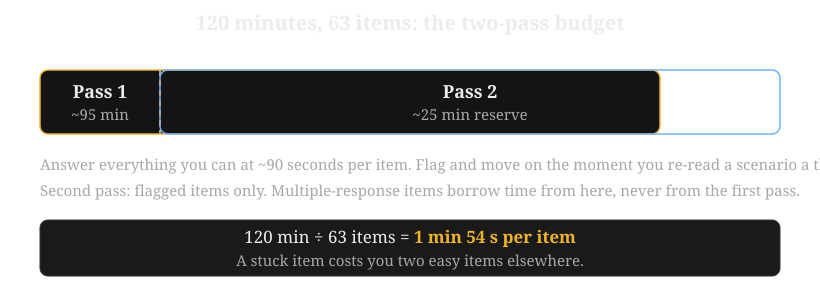
2. Read constraint-first, every item
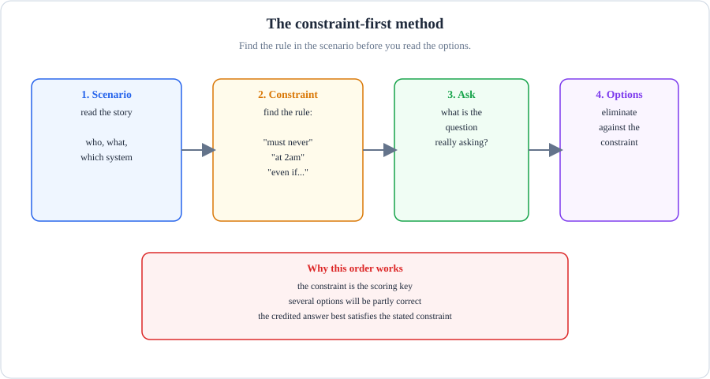
- Scenario: read the story - who, what, which system.
- Constraint: find the rule - "must never", "at 2am", "even if...".
- Ask: name what the question really wants.
- Options: eliminate against the constraint.
- The constraint is the scoring key. Several options will be partly correct; the credited answer best satisfies the stated constraint.
What breaks if a part fails: if you read the options first, the attractive wrong option anchors you - the trap is built to feel right.
- Find the constraint before the options. Scan the scenario for numbers and rules: the accuracy SLA, the latency budget, the cost ceiling, the regulation, the deadline. Underline them mentally.
- Predict the answer shape. Before reading option A, ask: "what would satisfy this constraint?" This inoculates you against attractive distractors.
- Judge each option against the constraint, not against general goodness. The exam's signature trap is an option that is good engineering but breaks the stated rule (the cheapest model that misses the SLA, the thorough review that misses the deadline).
- Watch for absolute words. "Never," "always," "every," and "no exceptions" in a scenario usually point to structural controls (filters, gates, contracts), not prompt wording.
two options are plausible and partially right. The credited one is the one that best satisfies every part of the constraint at once. When torn between two, re-read the constraint and ask which option leaves a piece of it unaddressed.
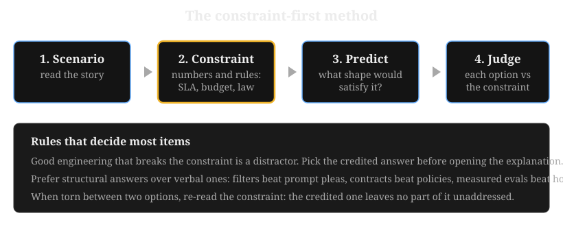
3. Multiple-response tactics
- Treat each option as its own true/false question. Decide independently whether the option belongs, then check that your "true" count matches the required number.
-
Beware of the overlap trap. Two options can both seem true. They can also cover the same ground. Judge each option against the constraint. Then pick the pair that covers it fully with no wasted overlap. In Q7, the router (B) already includes exact lookup for ID queries.So the correct pair is C (the fuzzy half) plus B (routing plus the exact half). This gives complete coverage and zero overlap.
- Beware the partial-credit trap. An option that is "mostly right but misses one constraint" is wrong. On this exam, partially satisfying the constraint is the most common distractor design.
- If you are sure about one option and torn on the second, eliminate the ones that violate any constraint first. The field usually narrows to two.
4. Domain-weighted triage
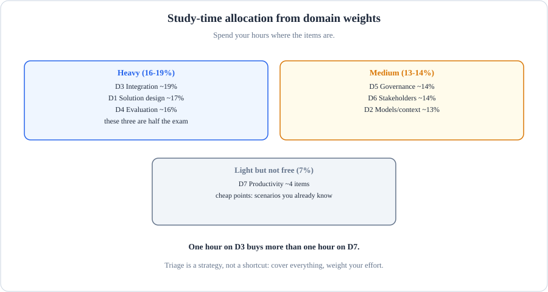
- Heavy (16-19%): D3, D1, D4. Deep passes here.
- Medium (13-14%): D5, D6, D2. Solid coverage.
- Light (7%): D7. Cheap points from scenarios you already know.
- Triage is a strategy, not a shortcut: cover everything, weight your effort.
What breaks if a part fails: if you skip D7 entirely, you donate four easy items - light does not mean zero.
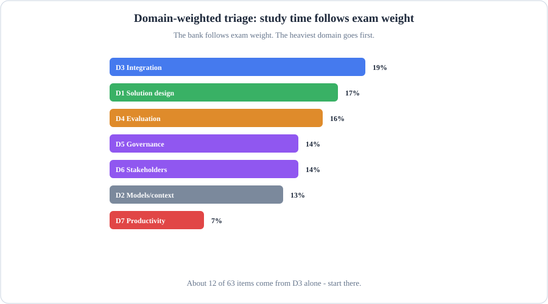
- The longest bar is D3 Integration at 19%: about 12 of 63 items. Start there.
- D1, D4 follow at 17% and 16%. These three domains are half the exam.
- D7 is 7%: real points, but one hour on D3 buys more than one hour on D7.
What breaks if a part fails: if you study every domain equally, you over-invest where the fewest items live.
- No domain exceeds 19 percent and six of seven sit between 13 and 19 percent. There is no "skip this domain" play. The score report shows percent-correct per domain, so a collapsed domain can sink you.
- D3 (Integration) is the largest at 19 percent: expect the most items on RAG design, MCP vs API vs agent-to-agent, tool bloat, and auth gaps.
- D2 (Prompting) is only 13 percent and ranks 6th of 7. Do not over-invest in prompt trivia. The exam tests model selection trade-offs and context engineering, not clever prompt tricks.
- D5 and D6 (Governance, Stakeholder) together are 28 percent. They have no CCAR-F equivalent. If you come from the Foundations tier, these two domains need extra study time.
5. When you are stuck
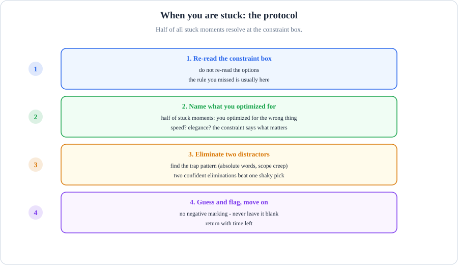
- Re-read the constraint box. Do not re-read the options. Half of stuck moments resolve here.
- Name what you optimized for. You were probably optimizing for the wrong thing.
- Eliminate two distractors. Find the trap pattern. Two confident eliminations beat one shaky pick.
- Guess and flag, move on. No negative marking. Never leave it blank.
What breaks if a part fails: if you freeze on one item, you steal time from items you would have gotten right.
- Read the constraint box again. Do not read the options. Half of all stuck moments resolve here. You optimize for the wrong thing.
- Ask "what would break in production?" The exam rewards the option that works in reality. This is the control that works when someone bypasses the prompt. This is the metric that catches the real failure. This is the SLA based on pilot data.
- Prefer structural answers over verbal ones. Filters beat prompt pleas. Contracts beat policies. Measured evals beat hoped-for improvements. When two options remain and one is structural, it is usually credited.
- Prefer the answer that addresses the whole scenario over the one that addresses half brilliantly.
- Never leave an item blank. There is no penalty for a wrong answer beyond the missed point, so a constraint-guided guess beats an empty one.
6. Common trap patterns in this bank (and on the exam)
- The aggregate trap: overall metrics hiding per-segment failures. Always check per-type, per-category, per-position numbers (Q59, Q32).
- The prompt-plea trap: "add it to the system prompt" as the safety or reliability fix. Prompts are bypassable; the credited answer is structural (Q34, Q36, Q28).
- The bigger-model trap: upgrading the model as the fix for retrieval, chunking, tool-bloat, or grounding problems. The failure is architectural, not capacity (Q3, Q28, Q56).
- The demo trap: judging by the happy path instead of measured coverage. Demos impress; eval sets decide (Q48).
- The good-engineering trap: an option that is sensible in general but violates the specific constraint (cost, latency, regulation). Always re-check the constraint last.
- The fan-out trap: parallelizing work that is actually sequential. Fan-out only helps independent subtasks; on a sequential dialogue it multiplies cost and fragments context (Q66).
- The retry-storm trap: answering a degraded dependency with more retries instead of timeouts, bulkheads, and circuit breakers. Retries deepen the overload they are meant to survive (Q83).
- The stale-eval trap: trusting evals drawn from an older production mix after the world changed. Green scores on last quarter's tickets say nothing about this quarter's traffic (Q86).
- The BAA-scope trap: assuming one BAA covers every data flow the agent touches, or that any plan is BAA-eligible. Coverage is per-flow and per-plan, never ambient (Q95, Q96).
- The sentiment trap: treating user love as evidence of task success. Applause measures feeling; only outcome metrics measure the job (Q101).